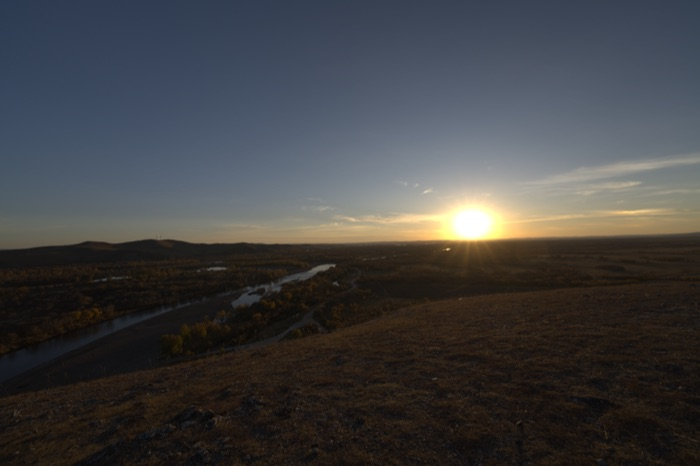

RawMaster 引擎（CIRAW 回退）
15已有操作类别CIRAW 参数化基图与 canonical API 返回分别报告
Sony 实拍 RAW 为 9504 × 6336 像素。SHA-256 8f96d2fd4fa0c76741ee09b486a4a5e17c8c893ce714060f2fe65eb34c891e1c。每个控件的测量边界和原始样本可在下表核对。
两款引擎在 68 项面板和照片操作上读回相同尺寸。往返使用已校准的两个档位时，RAWMaster 首帧有 68/68 项达到 LightFlow 区间，最终画面有 68/68 项达到。对第二组的 74 次首次档位，完成最终画面的中位数为 LightFlow 23.56 ms、RAWMaster 96.23 ms。
161 个清单项中，LightFlow 93 项，RAWMaster 161 项，Camera Raw 102 项取得独立实测。三方均有引擎或文档打开记录的有 71 项。表中数值为暖路径中位数 / p95（毫秒），p95 取最近秩。Adobe 每项三次暖样本的 p95 即三次中的最大值。计时边界及像素尺寸见各列。首次调用、原始样本和逐项设置保存在数据文件中。
设备为 Apple M4 Max。LightFlow 发布构建与着色器调用顺序见 LightFlow 源码核对及缺少同义操作的逐项依据。FlashRaw 解码策略、发版测试命令与基准复现步骤见 维护说明。
Camera Raw 镜头模糊开关另用 8 次 60 MP 文档打开复测。首次 A/B 逐像素遍历 256 个网格，未找到相差至少两个 RGB8 码值的位置。该操作继续列为未验证，文档打开时间保存在原始记录。蒙版色轮通过 Adobe 写回的字段及独立像素变化验证。镜头模糊的全图对照 · 蒙版色轮逐次结果
LightFlow 的 LUT 调色图还有独立的一批采样。LUT 逐次记录
另在原版着色器上复测黑白模式、白平衡预设、恢复拍摄白平衡和暗角样式。参数与像素证据
LightFlow 的自动色调与白平衡使用原版工作线程在 384 × 256 分析图上计算。先列示首次准备分析图的时间，再对两个起始配方逐次验证返回字段。分析样本与实际返回值
LightFlow 的剪切指示、临时剪切、锐化蒙版与锐化半径测到完整显示图读回；HSL 分组、八色选择及 CUBE 导入测到原版界面返回结果。其中 CUBE 导入另核对了应用后照片。照片与蒙版像素 · 控件、文件与照片回执
RAWMaster 的自动调整与吸管测到分析结果可用，读数测到已显示图像的数值更新，示波器测到离屏界面完成栅格化。逐项计时终点与返回数值 · 复用分析工作图前后的同机耗时 · 独立配方的双态像素验证
焦点操作和 LUT 导入计时到新画布可读，浮动示波器计时到原生面板完成离屏绘制。这张日落原片没有可分割的前景实例，主体对焦使用同一照片的注意力显著图选取焦点，并与两个手动起点的画面分别核对。五项交互的返回值与像素 · 仅使用前景实例时的结果
Camera Raw 的点颜色另有一组全尺寸打开记录。补充实测
在 Adobe 的 EXIF 镜头匹配测试中，四次自动识别均选中 Sony 14 mm。完整 RGB8 输出与手选 14 mm 的两次参照逐字节一致，与错选 20 mm 的结果有 56,027,352 个像素不同。表中汇总三次暖文档打开。镜头识别、照片差异与时间 · 原始输入和 Adobe 写回的 XMP · 其余控件的计时边界与逐项缺口
针对未能通过直方图区分的镜头调整，另从已经打开的完整文档读取 1024 像素 sRGB 位图作为空间像素证据。此项检验在计时后进行。镜头调整复核
移除横向色差在缩小后的画面上难以分辨。在 60 MP 原尺寸图上，用首组 A/B 在 16 × 16 个分区各选一个差异达到两个码值的像素，再由其余三组完全独立的打开逐个核对位置、通道、变化方向和幅度。原尺寸坐标与八次 RGB8 读数 · 整图哈希的复测记录
依据 Adobe 随附预设与镜头配置文件，另测自动色调、恢复拍摄白平衡、局部曲线和手动选择镜头型号。四项完整文档打开及像素记录
| 控件 | LightFlow · GPU 完成或分析结果 | RAWMaster · 交互帧或标注终点 | Camera Raw · 整幅打开 |
|---|---|---|---|
| Exposure light-exposure | 2.81 / 3.11n = 20 | 2.70 / 4.01n = 20 | 2994.58 / 3130.90n = 3 |
| Contrast light-contrast | 3.11 / 3.35n = 20 | 2.78 / 4.38n = 20 | 3718.77 / 3730.63n = 3 |
| Highlights light-highlights | 2.95 / 3.71n = 20 | 2.94 / 4.77n = 20 | 5648.05 / 5892.22n = 3 |
| Shadows light-shadows | 3.00 / 3.48n = 20 | 3.23 / 4.39n = 20 | 4085.15 / 4941.84n = 3 |
| Whites light-whites | 2.99 / 3.78n = 20 | 2.76 / 4.33n = 20 | 2870.76 / 3003.25n = 3 |
| Blacks light-blacks | 3.21 / 3.82n = 20 | 2.75 / 4.19n = 20 | 3266.76 / 3470.19n = 3 |
| Auto tone light-auto | 2.80 / 2.97n = 20 · 384 px 图像分析 | 5.22 / 7.92n = 10 · 图像分析 | 1288.34 / 1463.47n = 3 |
| 单控件 Auto light-auto-single | 35.42 / 36.64n = 10 · 原版界面手势至数值公布 | 5.54 / 7.50n = 10 · 图像分析 | 未单测 |
| 直方图五区拖动 light-histogram-drag | 21.25 / 21.82n = 10 · 原版界面手势至数值公布 | 0.03 / 0.03n = 10 · 画布读数／交互 | 未单测 |
| Shadows / Highlights clipping 指示 light-clipping-indicators | 4.17 / 4.81n = 10 · 2400 px 完整显示图读回 | 3.87 / 4.61n = 20 | 未单测 |
| Alt/Option 拖动剪切预览 light-clipping-modifier | 4.25 / 4.34n = 10 · 2400 px 完整显示图读回 | 6.88 / 7.78n = 10 · 画布读数／交互 | 未单测 |
| 数值输入与双击复位 light-numeric-reset | 17.82 / 18.75n = 10 · 原版界面手势至数值公布 | 0.03 / 0.03n = 10 · 画布读数／交互 | 未单测 |
| 局部 Exposure light-mask-exposure | 2.34 / 2.75n = 20 | 3.71 / 4.59n = 20 | 3468.77 / 4004.21n = 3 |
| 局部 Contrast light-mask-contrast | 2.52 / 2.94n = 20 | 2.78 / 3.72n = 20 | 812.13 / 4087.92n = 3 |
| 局部 Highlights light-mask-highlights | 2.33 / 3.10n = 20 | 3.34 / 4.78n = 20 | 5061.95 / 5505.41n = 3 |
| 局部 Shadows light-mask-shadows | 2.48 / 2.73n = 20 | 3.16 / 4.45n = 20 | 4095.63 / 5204.77n = 3 |
| 局部 Whites light-mask-whites | 2.54 / 2.98n = 20 | 3.01 / 3.73n = 20 | 3827.75 / 4221.79n = 3 |
| 局部 Blacks light-mask-blacks | 2.76 / 3.18n = 20 | 2.88 / 3.68n = 20 | 4010.85 / 4168.43n = 3 |
| 控件 | LightFlow · GPU 完成或分析结果 | RAWMaster · 交互帧或标注终点 | Camera Raw · 整幅打开 |
|---|---|---|---|
| As Shot color-wb-as-shot | 1.35 / 1.55n = 20 | 2.83 / 4.44n = 20 | 804.73 / 1142.29n = 3 |
| Auto color-wb-auto | 8.87 / 9.16n = 20 · 384 px 图像分析 | 72.56 / 76.70n = 10 · 图像分析 | 606.11 / 638.12n = 3 |
| Daylight / Cloudy / Shade / Tungsten / Fluorescent / Flash color-wb-presets | 1.52 / 1.65n = 20 | 3.95 / 4.35n = 20 | 563.57 / 663.50n = 3 |
| Temperature — RAW/DNG color-temp-raw | 3.20 / 3.85n = 20 | 3.91 / 4.47n = 20 | 596.22 / 609.96n = 3 |
| Temperature — JPEG/TIFF color-temp-rendered | 样本不适用 | 58.31 / 59.77n = 20 · 已显影照片的 2400 px 交互帧 | 样本不适用 |
| Tint color-tint | 3.84 / 7.51n = 20 | 4.15 / 4.63n = 20 | 801.29 / 1243.40n = 3 |
| White Balance Selector color-wb-picker | 21.80 / 22.38n = 10 · 原版界面手势至数值公布 | 71.09 / 76.28n = 10 · 图像分析 | 未单测 |
| Vibrance color-vibrance | 3.88 / 4.29n = 20 | 2.66 / 4.04n = 20 | 661.22 / 691.77n = 3 |
| Saturation color-saturation | 3.67 / 4.20n = 20 | 2.75 / 3.92n = 20 | 3395.68 / 3604.00n = 3 |
| B&W / 黑白处理 color-bw-treatment | 1.31 / 1.64n = 20 | 2.86 / 4.04n = 20 | 630.07 / 3696.59n = 3 |
| Vectorscope color-vectorscope | 0.77 / 1.20n = 20 · 256 × 168 矢量轨迹读回 | 0.94 / 1.16n = 10 · 示波器离屏绘制 | 未单测 |
| Skin Tone Indicator color-skin-indicator | 2.09 / 2.32n = 10 · 原版编辑器操作回执 | 0.80 / 1.25n = 10 · 示波器离屏绘制 | 未单测 |
| Lab Color Readouts color-lab-readouts | 无同义操作 | 0.02 / 0.15n = 10 · 画布读数／交互 | 未单测 |
| 可拆离浮动示波器 color-floating-scopes | 仅有相关操作 | 33.14 / 39.19n = 10 · 画布读数／交互 | 未单测 |
| 指针 RGB 值 color-rgb-readout | 仅有相关操作 | 0.02 / 0.04n = 10 · 画布读数／交互 | 未单测 |
| 最多 9 个颜色采样器 color-samplers | 无同义操作 | 0.12 / 0.14n = 10 · 画布读数／交互 | 未单测 |
| 局部 Temp color-mask-temp | 3.13 / 3.67n = 20 | 4.07 / 6.55n = 20 | 613.90 / 636.74n = 3 |
| 局部 Tint color-mask-tint | 3.08 / 4.38n = 20 | 3.96 / 6.23n = 20 | 580.41 / 681.09n = 3 |
| 局部 Hue / Fine Adjustment color-mask-hue | 2.36 / 2.58n = 20 · 2400 像素局部 GPU 操作 | 2.88 / 3.66n = 20 | 631.01 / 689.36n = 3 |
| 局部 Saturation color-mask-saturation | 3.16 / 4.43n = 20 | 3.08 / 3.81n = 20 | 642.13 / 1940.54n = 3 |
| 局部 Colorize color-mask-colorize | 仅有相关操作 | 3.26 / 4.25n = 20 | 3244.80 / 3313.91n = 3 |
| 控件 | LightFlow · GPU 完成或分析结果 | RAWMaster · 交互帧或标注终点 | Camera Raw · 整幅打开 |
|---|---|---|---|
| Apply / Glow Amount effects-glow-amount | 仅有相关操作 | 4.37 / 8.05n = 20 | 1832.37 / 1904.91n = 3 |
| Bloom / Diffusion / Halation / Motion / Streak effects-glow-styles | 无同义操作 | 6.57 / 7.48n = 20 | 2131.30 / 2134.81n = 3 |
| Range effects-glow-range | 仅有相关操作 | 6.57 / 7.56n = 20 | 1754.08 / 1951.95n = 3 |
| Spread effects-glow-spread | 无同义操作 | 6.72 / 7.07n = 20 | 2053.90 / 2287.88n = 3 |
| Warmth effects-glow-warmth | 无同义操作 | 6.78 / 7.65n = 20 | 1879.71 / 1977.72n = 3 |
| Direction effects-glow-direction | 无同义操作 | 6.70 / 8.06n = 20 | 4177.68 / 4396.18n = 3 |
| Softness effects-glow-softness | 无同义操作 | 6.32 / 7.59n = 20 | 2164.89 / 4448.03n = 3 |
| 蒙版内 Glow 与共享设置 effects-glow-mask | 仅有相关操作 | 5.17 / 9.79n = 20 | 903.40 / 1107.19n = 3 |
| Amount effects-grain-amount | 3.37 / 13.20n = 20 | 2.93 / 4.42n = 20 | 977.43 / 1115.00n = 3 |
| Size effects-grain-size | 3.42 / 28.02n = 20 | 4.30 / 5.87n = 20 | 1280.66 / 1299.98n = 3 |
| Roughness effects-grain-roughness | 9.86 / 30.55n = 20 | 4.21 / 4.95n = 20 | 3847.72 / 6785.14n = 3 |
| Highlight Priority / Color Priority / Paint Overlay effects-pcv-style | 0.67 / 1.16n = 20 | 2.23 / 2.86n = 20 | 919.57 / 987.53n = 3 |
| Amount effects-pcv-amount | 3.17 / 3.69n = 20 | 2.77 / 3.57n = 20 | 852.97 / 905.02n = 3 |
| Midpoint effects-pcv-midpoint | 3.25 / 21.86n = 20 | 3.10 / 3.81n = 20 | 1794.76 / 1864.82n = 3 |
| Roundness effects-pcv-roundness | 3.11 / 24.86n = 20 | 2.96 / 3.47n = 20 | 675.88 / 722.70n = 3 |
| Feather effects-pcv-feather | 4.24 / 10.13n = 20 | 2.34 / 2.87n = 20 | 686.12 / 740.09n = 3 |
| Highlights effects-pcv-highlights | 3.22 / 6.16n = 20 | 2.31 / 3.00n = 20 | 658.17 / 676.37n = 3 |
| Texture effects-texture | 3.32 / 6.40n = 20 | 3.10 / 4.25n = 20 | 2947.28 / 3075.17n = 3 |
| Clarity effects-clarity | 3.02 / 3.77n = 20 | 3.07 / 4.49n = 20 | 3990.67 / 4044.14n = 3 |
| Dehaze effects-dehaze | 3.19 / 4.42n = 20 | 12.45 / 14.90n = 20 | 2020.09 / 4285.81n = 3 |
| 局部 Texture effects-mask-texture | 3.13 / 3.87n = 20 | 6.05 / 11.13n = 20 | 2393.26 / 2561.86n = 3 |
| 局部 Clarity effects-mask-clarity | 3.35 / 4.30n = 20 | 5.89 / 10.32n = 20 | 2633.70 / 2635.34n = 3 |
| 局部 Grain effects-mask-grain | 3.43 / 4.76n = 20 | 3.18 / 4.40n = 20 | 2071.53 / 2171.68n = 3 |
| 控件 | LightFlow · GPU 完成或分析结果 | RAWMaster · 交互帧或标注终点 | Camera Raw · 整幅打开 |
|---|---|---|---|
| Parametric 模式 curve-parametric | 25.90 / 31.05n = 10 · 原版编辑器操作回执 | 0.03 / 0.03n = 10 · 画布读数／交互 | 未单测 |
| Highlights curve-param-highlights | 3.38 / 4.34n = 20 | 2.84 / 4.22n = 20 | 620.65 / 633.18n = 3 |
| Lights curve-param-lights | 3.48 / 6.13n = 20 | 2.80 / 4.19n = 20 | 2341.39 / 3179.44n = 3 |
| Darks curve-param-darks | 3.15 / 3.46n = 20 | 2.69 / 4.41n = 20 | 1988.76 / 2049.49n = 3 |
| Shadows curve-param-shadows | 3.13 / 3.46n = 20 | 2.92 / 4.34n = 20 | 2089.43 / 2116.62n = 3 |
| 三个区域分隔点 curve-param-splits | 3.27 / 3.62n = 20 | 3.94 / 4.54n = 20 | 1943.78 / 1981.81n = 3 |
| Point Curve curve-point | 3.06 / 3.98n = 20 | 3.21 / 4.90n = 20 | 2196.44 / 2236.80n = 3 |
| RGB / Red / Green / Blue curve-channels | 3.27 / 4.19n = 20 | 3.17 / 4.26n = 20 | 2037.96 / 2330.93n = 3 |
| Input / Output 数值 curve-input-output | 3.92 / 7.54n = 10 · 原版编辑器操作回执 | 0.05 / 0.08n = 10 · 画布读数／交互 | 未单测 |
| Reset Channel curve-reset-channel | 16.36 / 16.83n = 10 · 原版编辑器操作回执 | 0.02 / 0.03n = 10 · 画布读数／交互 | 未单测 |
| Refine Saturation curve-refine-saturation | 仅有相关操作 | 5.64 / 6.91n = 20 | 2463.92 / 3342.59n = 3 |
| Parametric 照片拖动 curve-tat-parametric | 仅有相关操作 | 0.01 / 0.01n = 10 · 画布读数／交互 | 未单测 |
| Point Curve 照片取样/拖动 curve-tat-point | 仅有相关操作 | 6.89 / 9.11n = 10 · 图像分析 | 未单测 |
| 曲线点键盘导航 curve-keyboard | 1.71 / 5.56n = 10 · 原版编辑器操作回执 | 0.03 / 0.05n = 10 · 画布读数／交互 | 未单测 |
| 局部 Curves curve-mask-curve | 3.26 / 10.90n = 20 | 6.35 / 7.26n = 20 | 4642.36 / 5308.74n = 3 |
| 控件 | LightFlow · GPU 完成或分析结果 | RAWMaster · 交互帧或标注终点 | Camera Raw · 整幅打开 |
|---|---|---|---|
| HSL 组织模式 mixer-hsl-mode | 1.53 / 1.69n = 10 · 原版编辑器操作回执 | 0.01 / 0.01n = 10 · 画布读数／交互 | 未单测 |
| Color 组织模式 mixer-color-mode | 无同义操作 | 0.00 / 0.00n = 10 · 画布读数／交互 | 未单测 |
| 8 个标准色域 mixer-eight-colors | 17.38 / 18.70n = 10 · 原版编辑器操作回执 | 0.03 / 0.03n = 10 · 画布读数／交互 | 未单测 |
| Hue mixer-hue | 3.52 / 21.14n = 20 | 3.30 / 6.41n = 20 | 771.71 / 4468.95n = 3 |
| Saturation mixer-saturation | 3.55 / 4.25n = 20 | 3.05 / 6.21n = 20 | 875.40 / 1222.62n = 3 |
| Luminance mixer-luminance | 3.74 / 5.95n = 20 | 3.37 / 5.65n = 20 | 1014.27 / 1152.63n = 3 |
| HSL Targeted Adjustment mixer-tat | 19.82 / 20.22n = 10 · 原版编辑器操作回执 | 5.78 / 8.62n = 10 · 图像分析 | 未单测 |
| Alt/Option 色域可视化 mixer-isolate-hue | 无同义操作 | 5.62 / 9.84n = 20 | 未单测 |
| B&W Mixer mixer-bw-mixer | 仅有相关操作 | 4.62 / 5.24n = 20 | 1010.31 / 2072.32n = 3 |
| Point Color 取样器 mixer-point-picker | 仅有相关操作 | 5.71 / 7.90n = 10 · 图像分析 | 未单测 |
| 最多 8 个独立色样 mixer-point-swatches | 无同义操作 | 6.12 / 9.49n = 10 · 图像分析 | 未单测 |
| Hue Shift mixer-point-hue | 仅有相关操作 | 3.09 / 3.92n = 20 | 702.20 / 755.69n = 3 |
| Saturation Shift mixer-point-saturation | 仅有相关操作 | 3.19 / 4.71n = 20 | 665.38 / 808.72n = 3 |
| Luminance Shift mixer-point-luminance | 仅有相关操作 | 3.29 / 4.28n = 20 | 678.64 / 695.77n = 3 |
| Variance mixer-point-variance | 无同义操作 | 3.56 / 4.35n = 20 | 4199.00 / 4429.17n = 3 |
| Range mixer-point-range | 仅有相关操作 | 3.72 / 4.15n = 20 | 4130.29 / 4572.63n = 3 |
| Visualise Range mixer-visualize-range | 仅有相关操作 | 5.58 / 10.04n = 20 | 未单测 |
| 蒙版内 Point Color mixer-point-mask | 仅有相关操作 | 3.50 / 4.87n = 20 | 831.17 / 879.50n = 3 |
| 控件 | LightFlow · GPU 完成或分析结果 | RAWMaster · 交互帧或标注终点 | Camera Raw · 整幅打开 |
|---|---|---|---|
| Shadows 色轮 grading-shadows | 15.98 / 22.35n = 20 | 2.90 / 4.42n = 20 | 722.63 / 818.74n = 3 |
| Midtones 色轮 grading-midtones | 16.11 / 30.29n = 20 | 2.95 / 4.32n = 20 | 646.37 / 699.37n = 3 |
| Highlights 色轮 grading-highlights | 15.66 / 19.18n = 20 | 3.11 / 4.31n = 20 | 682.16 / 697.23n = 3 |
| Global 色轮 grading-global | 16.07 / 19.16n = 20 | 3.25 / 4.81n = 20 | 928.43 / 3647.75n = 3 |
| 每轮 Luminance grading-luminance | 15.74 / 19.03n = 20 | 3.82 / 4.36n = 20 | 2030.33 / 2073.36n = 3 |
| Blending grading-blending | 15.87 / 22.77n = 20 | 5.10 / 6.35n = 20 | 1989.17 / 2048.11n = 3 |
| Balance grading-balance | 15.58 / 18.61n = 20 | 4.15 / 4.80n = 20 | 2221.81 / 2268.76n = 3 |
| Color LUT / B&W LUT 选择 grading-lut-select | 1.08 / 8.09n = 20 | 3.45 / 4.59n = 20 | 未单测 |
| 每个 LUT 的 Amount grading-lut-amount | 33.16 / 44.12n = 20 | 4.04 / 4.39n = 20 | 未单测 |
| 全片最多 3 个顺序 LUT grading-lut-stack | 1.54 / 3.32n = 20 | 5.52 / 6.85n = 20 | 未单测 |
| Reorder / Replace / Remove / Preview grading-lut-manage | 1.74 / 6.29n = 20 | 5.49 / 6.33n = 20 | 未单测 |
| 每个蒙版 1 个 LUT grading-lut-mask | 26.81 / 41.60n = 20 | 6.97 / 8.11n = 20 | 未单测 |
| 导入 CUBE / ZIP grading-lut-import | 32.20 / 33.08n = 10 · 原版编辑器操作回执 | 7.91 / 10.22n = 10 · 画布读数／交互 | 未单测 |
| 蒙版内三色轮 Color Grading grading-mask-wheels | 15.38 / 16.51n = 20 | 5.66 / 8.04n = 20 | 953.98 / 984.41n = 3 |
| 控件 | LightFlow · GPU 完成或分析结果 | RAWMaster · 交互帧或标注终点 | Camera Raw · 整幅打开 |
|---|---|---|---|
| Amount detail-sharpen-amount | 3.53 / 7.38n = 20 | 4.26 / 8.51n = 20 | 2062.21 / 2236.43n = 3 |
| Radius detail-sharpen-radius | 4.34 / 4.72n = 10 · 2400 px 完整显示图读回 | 7.17 / 8.50n = 20 | 2944.00 / 4907.02n = 3 |
| Detail detail-sharpen-detail | 3.26 / 5.12n = 20 | 3.82 / 4.49n = 20 | 2603.97 / 3872.56n = 3 |
| Masking detail-sharpen-masking | 3.37 / 4.05n = 20 | 3.82 / 4.11n = 20 | 805.61 / 1205.84n = 3 |
| Alt/Option Masking 预览 detail-mask-preview | 4.25 / 4.62n = 10 · 2400 px 完整显示图读回 | 48.07 / 85.84n = 20 | 未单测 |
| Luminance detail-nr-luminance | 10.65 / 27.64n = 20 | 3.19 / 4.74n = 20 | 927.70 / 1028.29n = 3 |
| Luminance Detail detail-nr-lum-detail | 8.34 / 9.09n = 20 | 4.11 / 4.65n = 20 | 959.17 / 1142.75n = 3 |
| Luminance Contrast detail-nr-lum-contrast | 8.76 / 12.15n = 20 | 4.92 / 8.40n = 20 | 5796.36 / 6006.74n = 3 |
| Color detail-nr-color | 8.23 / 8.87n = 20 | 3.94 / 6.95n = 20 | 4435.89 / 4592.30n = 3 |
| Color Detail detail-nr-color-detail | 10.34 / 15.22n = 20 | 6.27 / 8.25n = 20 | 4718.86 / 4763.44n = 3 |
| Denoise checkbox + Amount detail-denoise | 无同义操作 | 6.86 / 7.57n = 20 | 未单测 |
| 扩展非 RAW Denoise detail-denoise-formats | 无同义操作 | 191.89 / 199.48n = 20 · 已显影照片的 2400 px 交互帧 | 样本不适用 |
| Raw Details detail-raw-details | 仅有相关操作 | 95.62 / 110.84n = 20 | 未单测 |
| Super Resolution detail-super-resolution | 无同义操作 | 12848.69 / —n = 1 · 完整 2× TIFF16 导出 | 未单测 |
| 局部 Sharpness detail-mask-sharpness | 3.30 / 3.77n = 20 | 8.46 / 10.36n = 20 | 5497.23 / 6645.94n = 3 |
| 局部 Noise Reduction detail-mask-noise | 10.21 / 11.06n = 20 | 5.05 / 9.03n = 20 | 1064.72 / 1193.86n = 3 |
| 局部 Moiré Reduction detail-mask-moire | 无同义操作 | 5.11 / 9.45n = 20 | 1132.92 / 1346.37n = 3 |
| 控件 | LightFlow · GPU 完成或分析结果 | RAWMaster · 交互帧或标注终点 | Camera Raw · 整幅打开 |
|---|---|---|---|
| Enable Lens Profile Corrections optics-profile-enable | 482.69 / 482.93n = 10 · 原版编辑器操作回执 | 3.34 / 4.68n = 20 | 688.59 / 708.68n = 3 |
| EXIF 自动匹配配置 optics-profile-match | 仅有相关操作 | 0.03 / 0.04n = 10 · 画布读数／交互 | 1070.26 / 1163.56n = 3 |
| Make / Model / Profile optics-profile-select | 无同义操作 | 0.03 / 0.03n = 10 · 画布读数／交互 | 1383.35 / 6453.05n = 3 |
| Distortion Amount optics-profile-distortion | 无同义操作 | 3.97 / 4.49n = 20 | 3869.22 / 4754.61n = 3 |
| Vignetting Amount optics-profile-vignetting | 无同义操作 | 3.97 / 4.28n = 20 | 3092.50 / 3449.72n = 3 |
| Save New Lens Profile Defaults optics-profile-defaults | 无同义操作 | 0.13 / 0.31n = 10 · 画布读数／交互 | 未单测 |
| Remove Chromatic Aberration optics-remove-ca | 无同义操作 | 3.07 / 4.29n = 20 | 5185.70 / 5340.58n = 3 |
| Distortion Amount optics-manual-distortion | 无同义操作 | 3.15 / 4.33n = 20 | 4554.47 / 7010.21n = 3 |
| 紫色/绿色取样器 optics-defringe-picker | 无同义操作 | 5.57 / 5.73n = 10 · 图像分析 | 未单测 |
| Purple Amount optics-purple-amount | 无同义操作 | 4.02 / 6.53n = 20 | 4560.15 / 4977.59n = 3 |
| Purple Hue 双端范围 optics-purple-hue | 无同义操作 | 4.21 / 5.21n = 20 | 2012.61 / 3142.78n = 3 |
| Green Amount optics-green-amount | 无同义操作 | 3.46 / 4.49n = 20 | 1318.96 / 1721.80n = 3 |
| Green Hue 双端范围 optics-green-hue | 无同义操作 | 4.21 / 4.73n = 20 | 2495.38 / 2736.57n = 3 |
| Amount optics-lens-vignette-amount | 无同义操作 | 3.14 / 4.50n = 20 | 1873.78 / 1989.05n = 3 |
| Midpoint optics-lens-vignette-midpoint | 无同义操作 | 4.13 / 4.96n = 20 | 1939.77 / 1944.17n = 3 |
| 局部 Defringe / 保护 optics-local-defringe | 无同义操作 | 4.59 / 7.98n = 20 | 2996.80 / 3288.69n = 3 |
| 控件 | LightFlow · GPU 完成或分析结果 | RAWMaster · 交互帧或标注终点 | Camera Raw · 整幅打开 |
|---|---|---|---|
| Apply / 面板入口 blur-apply | 无同义操作 | 8.42 / 13.01n = 20 | 未验证出有效变化 |
| Blur Amount blur-amount | 无同义操作 | 11.93 / 12.80n = 20 | 未验证出有效变化 |
| Circle / Bubble / 5-blade / Ring / Anamorphic blur-bokeh | 无同义操作 | 11.49 / 13.21n = 20 | 未验证出有效变化 |
| Cat Eye blur-cat-eye | 无同义操作 | 11.12 / 12.78n = 20 | 未验证出有效变化 |
| Bokeh Boost blur-boost | 无同义操作 | 11.05 / 11.90n = 20 | 未验证出有效变化 |
| Focus Range blur-focus-range | 无同义操作 | 11.33 / 12.34n = 20 | 未验证出有效变化 |
| Subject Focus blur-subject-focus | 无同义操作 | 43.95 / 58.63n = 10 · 画布读数／交互 | 未单测 |
| Point Focus blur-point-focus | 无同义操作 | 16.31 / 17.33n = 10 · 画布读数／交互 | 未单测 |
| Area Focus blur-area-focus | 无同义操作 | 16.00 / 20.06n = 10 · 画布读数／交互 | 未单测 |
| Visualize Depth blur-visualize-depth | 无同义操作 | 9.13 / 12.34n = 20 | 未单测 |
| Focus 笔刷 blur-refine-focus | 无同义操作 | 13.05 / 17.10n = 20 | 未单测 |
| Blur 笔刷 blur-refine-blur | 无同义操作 | 12.59 / 17.68n = 20 | 未单测 |
| Amount blur-refine-amount | 无同义操作 | 13.58 / 16.84n = 20 | 未单测 |
| Brush Size blur-brush-size | 无同义操作 | 13.85 / 15.41n = 20 | 未单测 |
| Feather blur-feather | 无同义操作 | 16.92 / 18.94n = 20 | 未单测 |
| Flow blur-flow | 无同义操作 | 15.68 / 17.01n = 20 | 未单测 |
| Auto Mask blur-auto-mask | 无同义操作 | 14.19 / 16.94n = 20 | 未单测 |
| Reset Refinements blur-reset-refinement | 无同义操作 | 13.76 / 17.42n = 20 | 未单测 |
| Device Depth blur-device-depth | 无同义操作 | 52.20 / 56.49n = 20 · 已显影照片的 2400 px 交互帧 | 样本不适用 |
只采样照片区域。报告按目标画面差异的 20% 定义首个可见变化，逐次核对起始画面、最终画面及输入值。每款应用的输入入口、照片尺寸和视区见采集记录。
LightFlow 的浏览器合成器记录另列一栏。其时间截止于 Chromium 交换画面，屏幕栏则截止于 macOS 窗口服务器采到照片变化。数值为中位数 / p95（毫秒）。
| 控件 | LightFlow 浏览器合成器 | LightFlow 屏幕 | RAWMaster 屏幕 | Camera Raw 屏幕 |
|---|---|---|---|---|
| Exposure | 31.28 / 31.70n = 10 | 30.18 / 60.20n = 10 | 14.89 / 22.53n = 10 | 107.02 / 125.54n = 10 |
| Contrast | 30.66 / 31.51n = 10 | 27.67 / 40.37n = 10 | 24.16 / 32.71n = 10 | 91.72 / 118.53n = 10 |
| Highlights | 31.06 / 31.60n = 10 | 28.79 / 38.08n = 10 | 22.47 / 43.97n = 10 | 109.09 / 122.07n = 10 |
| Shadows | 30.91 / 31.25n = 10 | 25.34 / 37.70n = 10 | 19.51 / 34.52n = 10 | 105.84 / 136.32n = 10 |
| Whites | 30.61 / 31.08n = 10 | 29.60 / 37.09n = 10 | 18.71 / 27.55n = 10 | 未验证出有效变化 |
| Blacks | 30.60 / 31.02n = 10 | 28.86 / 40.36n = 10 | 22.30 / 29.50n = 10 | 98.13 / 138.86n = 10 |
| Temperature — RAW/DNG | 30.74 / 31.29n = 10 | 27.47 / 37.61n = 10 | 19.95 / 28.80n = 10 | 未验证出有效变化 |
| Tint | 30.78 / 31.50n = 10 | 28.89 / 35.60n = 10 | 22.88 / 26.89n = 10 | 104.91 / 145.59n = 10 |
| Vibrance | 30.65 / 31.27n = 10 | 30.04 / 34.72n = 10 | 18.69 / 27.85n = 10 | 未验证出有效变化 |
| Saturation | 30.96 / 31.47n = 10 | 29.55 / 38.53n = 10 | 21.09 / 26.29n = 10 | 未验证出有效变化 |
| Apply / Glow Amount | 30.72 / 31.75n = 10 | 26.93 / 32.55n = 10 | 18.52 / 28.15n = 10 | 未单测 |
| Amount | 30.79 / 31.63n = 10 | 22.85 / 31.37n = 10 | 17.33 / 24.20n = 10 | 未单测 |
| Amount | 30.93 / 31.01n = 10 | 25.91 / 35.90n = 10 | 17.49 / 27.45n = 10 | 未单测 |
| Texture | 30.76 / 31.56n = 10 | 26.91 / 42.36n = 10 | 21.12 / 29.68n = 10 | 未单测 |
| Clarity | 31.18 / 31.49n = 10 | 27.70 / 41.69n = 10 | 19.85 / 32.85n = 10 | 未单测 |
| Dehaze | 31.07 / 31.42n = 10 | 29.86 / 32.23n = 10 | 15.82 / 23.04n = 10 | 未单测 |
LightFlow 已验证 16 项 · RAWMaster 已验证 16 项 · Camera Raw 已验证 6 项。
LightFlow · Trusted Return on prepared LightFlow numeric control through local Chrome DevTools; reads committed slider value。画布证据
RAWMaster · typed numeric commit through the shipping EditingController; nonactivating background AppKit canvas。画布证据
Camera Raw · Physical numeric typing and Tab to ScreenCaptureKit witness; committed value read before the following edit。画布证据
LightFlow 原版编辑器 2d41ab1 在 Electron 内的 Chrome/146.0.7680.188 运行。后台窗口与另外两端均显示 2368 × 1579 像素的照片。LightFlow 从已填数值的回车提交计时，RAWMaster 从编辑控制器提交计时，Adobe 从物理键入数值计时。三方均在照片中央 60% 区域采样。第 1 轮原始帧和输入 · 第 2 轮原始帧和输入 · 离线像素复核 · 复现后台窗口
Camera Raw 使用物理数值输入和 Tab 提交。部分数值框会延后显示完整数字，逐次测量时用下一次输入前的字段值复核，并独立核对照片响应。第二轮在纹理测试时遇到屏幕采集连接中断。已完成的操作逐组复核，每项保留同一轮内连续十次的结果。首轮照片帧和输入 · 第二轮照片帧和输入 · 离线复核程序
Camera Raw 的三项历史单次屏幕观测保存在下方历史基线。
RAWMaster 构建 06cd00a4 启动 3 个独立进程，每个进程、每个控件先交替输入两态 20 次，再输入 20 个不同的新值。LightFlow 的同尺寸原版查看器每组 20 次。合并所有进程后，两态往返有 8/8 项同时达到中位数与 p95 目标，连续新值有 8/8 项。目标按 LightFlow 中位数加 10% 或 1 ms、p95 加 20% 或 2 ms，分别取较大容差。当前三次进程与全体样本 · 高光与阴影的分阶段耗时和像素对照 · 前一构建三轮原始记录
| 正式进程 | 两态往返达标 | 连续新值达标 |
|---|---|---|
| 第 1 次 | 8 / 8 | 8 / 8 |
| 第 2 次 | 8 / 8 | 8 / 8 |
| 第 3 次 | 8 / 8 | 8 / 8 |
| 控件 | 输入 | LightFlow 中位数 / p95（ms） | RAWMaster 中位数 / p95（ms） | 落在区间内 |
|---|---|---|---|---|
| Exposure | 两态 | 4.63 / 4.84 · n=20 | 2.90 / 4.13 · n=60 | 是 |
| Contrast | 两态 | 4.71 / 5.02 · n=20 | 3.13 / 4.10 · n=60 | 是 |
| Highlights | 两态 | 4.88 / 5.32 · n=20 | 3.24 / 4.45 · n=60 | 是 |
| Shadows | 两态 | 4.89 / 5.63 · n=20 | 3.17 / 4.49 · n=60 | 是 |
| Whites | 两态 | 4.89 / 5.34 · n=20 | 3.04 / 4.33 · n=60 | 是 |
| Blacks | 两态 | 5.06 / 5.83 · n=20 | 3.03 / 4.40 · n=60 | 是 |
| Saturation | 两态 | 5.06 / 5.32 · n=20 | 3.00 / 4.16 · n=60 | 是 |
| Vibrance | 两态 | 5.13 / 6.26 · n=20 | 3.08 / 5.39 · n=60 | 是 |
| Exposure | 连续新值 | 5.98 / 6.40 · n=20 | 3.47 / 4.74 · n=60 | 是 |
| Contrast | 连续新值 | 4.92 / 5.11 · n=20 | 3.89 / 4.52 · n=60 | 是 |
| Highlights | 连续新值 | 5.87 / 7.00 · n=20 | 3.82 / 4.61 · n=60 | 是 |
| Shadows | 连续新值 | 5.98 / 7.71 · n=20 | 4.03 / 5.11 · n=60 | 是 |
| Whites | 连续新值 | 6.33 / 7.74 · n=20 | 4.04 / 5.09 · n=60 | 是 |
| Blacks | 连续新值 | 6.23 / 7.70 · n=20 | 3.84 / 4.74 · n=60 | 是 |
| Saturation | 连续新值 | 5.52 / 6.10 · n=20 | 4.07 / 4.63 · n=60 | 是 |
| Vibrance | 连续新值 | 6.86 / 7.70 · n=20 | 4.01 / 4.47 · n=60 | 是 |
驻留同一张 RAW，逐次提交相同的界面值，计时到完整的 2400 × 1600、sRGB RGBA8 显示缓冲区可被 CPU 读取。每项两次校准后再交替 20 次，每次在计时外校验照片像素。两款产品保留各自的颜色和色调算法。表内 8/8 项进入采用项目发版容差的 LightFlow 区间。中位数容差为 10% 或 1 ms 中较大者，p95 为 20% 或 2 ms 中较大者。LightFlow 查看器原始记录 · RAWMaster 显示图原始记录
| 控件 | 两态 | LightFlow 中位数 / p95（ms） | RAWMaster 中位数 / p95（ms） | 落在区间内 |
|---|---|---|---|---|
| Exposure | 0 ↔ 0.5 | 4.63 / 4.84 | 3.06 / 4.27 | 是 |
| Contrast | 0 ↔ 30 | 4.71 / 5.02 | 2.79 / 3.53 | 是 |
| Highlights | 0 ↔ 30 | 4.88 / 5.32 | 3.09 / 4.32 | 是 |
| Shadows | 0 ↔ 30 | 4.89 / 5.63 | 2.93 / 4.06 | 是 |
| Whites | 0 ↔ 30 | 4.89 / 5.34 | 2.92 / 3.97 | 是 |
| Blacks | 0 ↔ -30 | 5.06 / 5.83 | 3.04 / 4.36 | 是 |
| Saturation | 0 ↔ 30 | 5.06 / 5.32 | 3.04 / 4.26 | 是 |
| Vibrance | 0 ↔ 30 | 5.13 / 6.26 | 2.93 / 4.10 | 是 |
同一个控件逐次输入不同数值，每个值都产生独立的像素摘要。两端均使用正式缓存策略。8/8 项的中位数和 p95 同时落在上述区间。
| 控件 | LightFlow 中位数 / p95（ms） | RAWMaster 中位数 / p95（ms） | 落在区间内 |
|---|---|---|---|
| Exposure | 5.98 / 6.40 | 3.63 / 4.08 | 是 |
| Contrast | 4.92 / 5.11 | 3.62 / 4.29 | 是 |
| Highlights | 5.87 / 7.00 | 4.00 / 4.60 | 是 |
| Shadows | 5.98 / 7.71 | 3.91 / 4.63 | 是 |
| Whites | 6.33 / 7.74 | 3.55 / 4.35 | 是 |
| Blacks | 6.23 / 7.70 | 3.64 / 3.92 | 是 |
| Saturation | 5.52 / 6.10 | 3.93 / 4.22 | 是 |
| Vibrance | 6.86 / 7.70 | 3.60 / 3.97 | 是 |
基准使用 LightFlow 的 EV 与 −100…100 输入。RAWMaster 将 EV 除以 2 写入曝光配方，将黑色输入除以 −100 写入黑点，其余六项除以 100。两端分别核对编辑后像素确有变化。输入映射与计时程序
在同一构建内依次用原实现、新实现、新实现、原实现运行四个独立进程。每种实现每控件合并 40 次热编辑，逐项列出中位数和 p95。十组完整画面共比对 153,600,000 字节，12 个颜色通道相差一个 8 位码值，透明度均相同。四轮逐帧耗时和全画面摘要
| 控件 | 逐段扫描（ms） | 直接定位（ms） |
|---|---|---|
| Highlights | 6.33 / 8.53 | 6.32 / 13.82 |
| Lights | 6.46 / 8.91 | 6.36 / 16.02 |
| Darks | 6.35 / 8.40 | 6.07 / 16.03 |
| Shadows | 8.31 / 19.93 | 5.97 / 11.22 |
| 三个区域分隔点 | 8.52 / 10.91 | 8.21 / 12.13 |
同一张 60 MP RAW，同一档位，输出均为 2400 × 1600 的完整、不透明 sRGB8 照片。每项先测两个初始状态，再往返编辑 20 次。LightFlow 从原版查看器开始处理输入计时，保留其逐帧调度。RAWMaster 从引擎收到交互请求计时，首帧读回后立即请求精确画面。两侧均在计时后核对整帧像素。此表不含物理屏幕呈现和 RAWMaster 界面松手延迟。
首个完整缓冲区 31/31 项达标，首次与最终画面逐字节一致 31/31 项达标，完成最终帧读回 31/31 项达标。620 次热编辑中，LightFlow 有 50 次首帧已等于最终画面，RAWMaster 为 620 次。已定稿画面按完整配方复用。优化前后独立核对的 62 个最终状态逐字节一致。各控件首次进入的耗时见原始记录。LightFlow 逐帧记录 · RAWMaster 双阶段记录 · 62 个状态的前后对照 · 调度与参数说明
| 控件 | LightFlow 中位数 / p95（ms） | RAWMaster 中位数 / p95（ms） | 同水位 |
|---|---|---|---|
| Temperature — RAW/DNG | 5.02 / 5.62 | 1.12 / 1.32 | 是 |
| Tint | 5.57 / 6.91 | 1.05 / 1.23 | 是 |
| Texture | 5.12 / 6.87 | 1.03 / 1.25 | 是 |
| Clarity | 5.31 / 6.40 | 1.04 / 1.21 | 是 |
| Amount | 4.65 / 5.13 | 1.02 / 1.19 | 是 |
| Size | 4.84 / 5.44 | 1.13 / 1.35 | 是 |
| Roughness | 5.01 / 5.91 | 1.17 / 1.29 | 是 |
| Amount | 5.35 / 5.78 | 1.03 / 1.21 | 是 |
| Midpoint | 4.94 / 5.79 | 1.04 / 1.12 | 是 |
| Roundness | 4.80 / 5.88 | 1.05 / 1.15 | 是 |
| Feather | 5.48 / 6.88 | 1.01 / 1.12 | 是 |
| Highlights | 6.13 / 7.45 | 1.11 / 1.29 | 是 |
| Highlights | 5.22 / 6.08 | 1.01 / 1.21 | 是 |
| Lights | 5.26 / 6.04 | 1.23 / 1.39 | 是 |
| Darks | 5.37 / 6.14 | 1.17 / 1.33 | 是 |
| Shadows | 4.82 / 6.22 | 1.12 / 1.38 | 是 |
| 三个区域分隔点 | 5.41 / 6.10 | 1.04 / 1.15 | 是 |
| Hue | 5.71 / 6.13 | 1.02 / 1.21 | 是 |
| Saturation | 4.94 / 5.46 | 1.04 / 1.16 | 是 |
| Luminance | 4.88 / 5.14 | 1.11 / 1.34 | 是 |
| Shadows 色轮 | 11.67 / 17.95 | 1.15 / 1.32 | 是 |
| Midtones 色轮 | 11.62 / 17.59 | 1.11 / 1.36 | 是 |
| Highlights 色轮 | 11.01 / 17.37 | 1.15 / 1.20 | 是 |
| Global 色轮 | 11.08 / 17.61 | 1.13 / 1.33 | 是 |
| Amount | 4.97 / 5.68 | 1.08 / 1.36 | 是 |
| Radius | 4.86 / 5.21 | 1.16 / 1.39 | 是 |
| Detail | 4.88 / 5.50 | 1.14 / 1.31 | 是 |
| Masking | 5.30 / 6.26 | 1.03 / 1.19 | 是 |
| Luminance | 4.65 / 5.20 | 1.05 / 1.28 | 是 |
| Color | 4.67 / 5.14 | 1.10 / 1.23 | 是 |
| Luminance Detail | 4.74 / 10.84 | 1.13 / 1.25 | 是 |
| 控件 | LightFlow 中位数 / p95（ms） | RAWMaster 中位数 / p95（ms） | 同水位 |
|---|---|---|---|
| Temperature — RAW/DNG | 5.02 / 5.62 | 1.12 / 1.32 | 是 |
| Tint | 5.57 / 6.91 | 1.05 / 1.23 | 是 |
| Texture | 22.08 / 23.05 | 1.03 / 1.25 | 是 |
| Clarity | 22.47 / 24.20 | 1.04 / 1.21 | 是 |
| Amount | 21.55 / 22.57 | 1.02 / 1.19 | 是 |
| Size | 21.45 / 22.80 | 1.13 / 1.35 | 是 |
| Roughness | 21.87 / 22.82 | 1.17 / 1.29 | 是 |
| Amount | 22.11 / 22.70 | 1.03 / 1.21 | 是 |
| Midpoint | 22.05 / 23.25 | 1.04 / 1.12 | 是 |
| Roundness | 21.68 / 23.05 | 1.05 / 1.15 | 是 |
| Feather | 22.48 / 23.32 | 1.01 / 1.12 | 是 |
| Highlights | 22.09 / 23.45 | 1.11 / 1.29 | 是 |
| Highlights | 21.91 / 23.21 | 1.01 / 1.21 | 是 |
| Lights | 22.34 / 23.17 | 1.23 / 1.39 | 是 |
| Darks | 21.91 / 23.07 | 1.17 / 1.33 | 是 |
| Shadows | 21.81 / 22.56 | 1.12 / 1.38 | 是 |
| 三个区域分隔点 | 22.22 / 23.45 | 1.04 / 1.15 | 是 |
| Hue | 21.96 / 23.00 | 1.02 / 1.21 | 是 |
| Saturation | 21.74 / 22.30 | 1.04 / 1.16 | 是 |
| Luminance | 21.70 / 22.12 | 1.11 / 1.34 | 是 |
| Shadows 色轮 | 22.09 / 23.61 | 1.15 / 1.32 | 是 |
| Midtones 色轮 | 21.81 / 23.57 | 1.11 / 1.36 | 是 |
| Highlights 色轮 | 22.02 / 22.66 | 1.15 / 1.20 | 是 |
| Global 色轮 | 21.82 / 22.85 | 1.13 / 1.33 | 是 |
| Amount | 21.93 / 22.85 | 1.08 / 1.36 | 是 |
| Radius | 21.55 / 22.14 | 1.16 / 1.39 | 是 |
| Detail | 21.61 / 22.54 | 1.14 / 1.31 | 是 |
| Masking | 22.26 / 23.21 | 1.03 / 1.19 | 是 |
| Luminance | 12.68 / 21.30 | 1.05 / 1.28 | 是 |
| Color | 21.87 / 23.23 | 1.10 / 1.23 | 是 |
| Luminance Detail | 22.06 / 23.25 | 1.13 / 1.25 | 是 |
| 控件 | LightFlow 中位数 / p95（ms） | RAWMaster 中位数 / p95（ms） | 同水位 |
|---|---|---|---|
| Temperature — RAW/DNG | 20.84 / 22.09 | 1.67 / 1.89 | 是 |
| Tint | 21.50 / 22.83 | 1.56 / 1.73 | 是 |
| Texture | 22.08 / 23.05 | 1.54 / 1.75 | 是 |
| Clarity | 22.47 / 24.20 | 1.55 / 1.75 | 是 |
| Amount | 21.55 / 22.57 | 1.52 / 1.73 | 是 |
| Size | 21.45 / 22.80 | 1.66 / 1.90 | 是 |
| Roughness | 21.87 / 22.82 | 1.71 / 1.90 | 是 |
| Amount | 22.11 / 22.70 | 1.54 / 1.71 | 是 |
| Midpoint | 22.05 / 23.25 | 1.54 / 1.65 | 是 |
| Roundness | 21.68 / 23.05 | 1.54 / 1.70 | 是 |
| Feather | 22.48 / 23.32 | 1.52 / 1.66 | 是 |
| Highlights | 22.09 / 23.45 | 1.63 / 1.84 | 是 |
| Highlights | 21.91 / 23.21 | 1.55 / 1.71 | 是 |
| Lights | 22.34 / 23.17 | 1.80 / 1.98 | 是 |
| Darks | 21.91 / 23.07 | 1.72 / 1.88 | 是 |
| Shadows | 21.81 / 22.56 | 1.62 / 1.91 | 是 |
| 三个区域分隔点 | 22.22 / 23.45 | 1.54 / 1.64 | 是 |
| Hue | 21.96 / 23.00 | 1.52 / 1.71 | 是 |
| Saturation | 21.74 / 22.30 | 1.51 / 1.70 | 是 |
| Luminance | 21.70 / 22.12 | 1.61 / 1.90 | 是 |
| Shadows 色轮 | 22.09 / 23.61 | 1.68 / 1.96 | 是 |
| Midtones 色轮 | 21.81 / 23.57 | 1.69 / 1.87 | 是 |
| Highlights 色轮 | 22.02 / 22.66 | 1.69 / 1.79 | 是 |
| Global 色轮 | 21.82 / 22.85 | 1.66 / 1.88 | 是 |
| Amount | 21.93 / 22.85 | 1.61 / 1.88 | 是 |
| Radius | 21.55 / 22.14 | 1.67 / 2.02 | 是 |
| Detail | 21.61 / 22.54 | 1.66 / 1.90 | 是 |
| Masking | 22.26 / 23.21 | 1.52 / 1.71 | 是 |
| Luminance | 21.10 / 22.04 | 1.53 / 1.85 | 是 |
| Color | 21.87 / 23.23 | 1.58 / 1.77 | 是 |
| Luminance Detail | 22.06 / 23.25 | 1.65 / 1.82 | 是 |
两款引擎使用相同的输入档位和 2400 × 1600 sRGB8 完整照片。每项先测两个初始画面，再往返编辑 20 次。其中 18 项局部编辑同时验证了蒙版内颜色变化和蒙版外颜色稳定。首个完整画面 37/37 项达标，首次与最终画面逐字节一致 37/37 项达标，完成最终画面读回 37/37 项达标。两个首次状态另存于报告，往返编辑包含产品正常使用的缓存。
每个控件的 A、B 两档各取一次，原片已驻留。下表的中位数和 p95 描述相同的整组首次操作，每个档位只有一个首次样本。发布检查单独比较这组操作，缓存命中的时延另列于下方。
| 终点 | LightFlow 中位数 / p95（ms） | RAWMaster 中位数 / p95（ms） | 每端次数 | 达到区间 |
|---|---|---|---|---|
| 首个完整画面 | 7.28 / 188.07 | 5.27 / 15.48 | 74 | 是 |
| 首次与最终画面逐字节一致 | 22.13 / 210.22 | 96.23 / 477.94 | 74 | 超出 |
| 完成最终画面读回 | 23.56 / 210.22 | 96.23 / 477.94 | 74 | 超出 |
每次均用同一份 74 个新状态的清单、相同的 60 MP 原片和显示尺寸。各格为中位数 / p95，单位为毫秒。
| 控件 | LightFlow 中位数 / p95（ms） | RAWMaster 中位数 / p95（ms） | 达到区间 |
|---|---|---|---|
| Daylight / Cloudy / Shade / Tungsten / Fluorescent / Flash | 4.85 / 5.53 | 1.10 / 1.20 | 是 |
| As Shot | 5.04 / 5.66 | 1.05 / 1.18 | 是 |
| B&W / 黑白处理 | 4.75 / 5.98 | 1.12 / 1.21 | 是 |
| Highlight Priority / Color Priority / Paint Overlay | 4.36 / 7.70 | 1.06 / 1.29 | 是 |
| Dehaze | 4.44 / 7.21 | 1.41 / 1.56 | 是 |
| Point Curve | 4.18 / 9.88 | 1.06 / 1.25 | 是 |
| RGB / Red / Green / Blue | 4.49 / 5.30 | 1.11 / 1.20 | 是 |
| 局部 Curves | 4.81 / 6.42 | 1.14 / 1.41 | 是 |
| 每轮 Luminance | 16.95 / 19.54 | 1.19 / 1.38 | 是 |
| Blending | 16.69 / 19.18 | 1.23 / 1.43 | 是 |
| Balance | 16.94 / 17.61 | 1.23 / 1.39 | 是 |
| Luminance Contrast | 4.81 / 11.79 | 1.05 / 1.17 | 是 |
| Color Detail | 4.27 / 7.67 | 1.13 / 1.30 | 是 |
| Color LUT / B&W LUT 选择 | 4.92 / 7.42 | 1.10 / 1.40 | 是 |
| 每个 LUT 的 Amount | 4.60 / 7.33 | 1.07 / 1.21 | 是 |
| 全片最多 3 个顺序 LUT | 5.39 / 8.21 | 1.09 / 1.22 | 是 |
| Reorder / Replace / Remove / Preview | 5.18 / 8.21 | 1.08 / 1.27 | 是 |
| 每个蒙版 1 个 LUT | 7.08 / 7.98 | 1.10 / 1.27 | 是 |
| 局部 Exposure | 7.18 / 7.56 | 1.10 / 1.23 | 是 |
| 局部 Contrast | 7.48 / 8.84 | 1.17 / 1.31 | 是 |
| 局部 Highlights | 5.64 / 8.52 | 1.11 / 1.34 | 是 |
| 局部 Shadows | 5.05 / 7.99 | 1.18 / 1.41 | 是 |
| 局部 Whites | 6.00 / 8.04 | 1.19 / 1.34 | 是 |
| 局部 Blacks | 5.08 / 7.15 | 1.19 / 1.37 | 是 |
| 局部 Temp | 4.66 / 5.55 | 1.06 / 1.29 | 是 |
| 局部 Tint | 4.47 / 5.11 | 1.10 / 1.39 | 是 |
| 局部 Hue / Fine Adjustment | 4.61 / 5.60 | 1.06 / 1.24 | 是 |
| 局部 Saturation | 4.75 / 6.20 | 1.06 / 1.29 | 是 |
| 局部 Texture | 4.38 / 5.67 | 1.07 / 1.31 | 是 |
| 局部 Clarity | 4.32 / 5.49 | 1.17 / 2.73 | 是 |
| 局部 Grain | 4.67 / 5.77 | 4.95 / 5.62 | 是 |
| 蒙版内三色轮 Color Grading | 16.59 / 16.79 | 1.17 / 1.30 | 是 |
| 局部 Sharpness | 4.45 / 4.86 | 1.15 / 1.41 | 是 |
| 局部 Noise Reduction | 4.53 / 5.60 | 1.13 / 1.22 | 是 |
| Shadows / Highlights clipping 指示 | 4.83 / 6.96 | 1.12 / 1.45 | 是 |
| Alt/Option 拖动剪切预览 | 4.70 / 6.55 | 1.21 / 1.35 | 是 |
| Alt/Option Masking 预览 | 5.48 / 7.22 | 1.03 / 1.16 | 是 |
| 控件 | LightFlow 中位数 / p95（ms） | RAWMaster 中位数 / p95（ms） | 达到区间 |
|---|---|---|---|
| Daylight / Cloudy / Shade / Tungsten / Fluorescent / Flash | 4.85 / 5.53 | 1.10 / 1.20 | 是 |
| As Shot | 5.04 / 5.66 | 1.05 / 1.18 | 是 |
| B&W / 黑白处理 | 4.75 / 5.98 | 1.12 / 1.21 | 是 |
| Highlight Priority / Color Priority / Paint Overlay | 4.36 / 7.70 | 1.06 / 1.29 | 是 |
| Dehaze | 4.44 / 7.21 | 1.41 / 1.56 | 是 |
| Point Curve | 4.18 / 9.88 | 1.06 / 1.25 | 是 |
| RGB / Red / Green / Blue | 4.49 / 5.30 | 1.11 / 1.20 | 是 |
| 局部 Curves | 5.21 / 21.68 | 1.14 / 1.41 | 是 |
| 每轮 Luminance | 21.60 / 26.77 | 1.19 / 1.38 | 是 |
| Blending | 21.97 / 26.61 | 1.23 / 1.43 | 是 |
| Balance | 21.59 / 23.21 | 1.23 / 1.39 | 是 |
| Luminance Contrast | 21.02 / 23.14 | 1.05 / 1.17 | 是 |
| Color Detail | 4.39 / 19.52 | 1.13 / 1.30 | 是 |
| Color LUT / B&W LUT 选择 | 20.16 / 22.05 | 1.10 / 1.40 | 是 |
| 每个 LUT 的 Amount | 4.60 / 7.33 | 1.07 / 1.21 | 是 |
| 全片最多 3 个顺序 LUT | 5.39 / 8.21 | 1.09 / 1.22 | 是 |
| Reorder / Replace / Remove / Preview | 5.18 / 8.21 | 1.08 / 1.27 | 是 |
| 每个蒙版 1 个 LUT | 7.08 / 7.98 | 1.10 / 1.27 | 是 |
| 局部 Exposure | 7.18 / 7.56 | 1.10 / 1.23 | 是 |
| 局部 Contrast | 23.57 / 24.56 | 1.17 / 1.31 | 是 |
| 局部 Highlights | 24.35 / 25.75 | 1.11 / 1.34 | 是 |
| 局部 Shadows | 24.02 / 25.22 | 1.18 / 1.41 | 是 |
| 局部 Whites | 21.48 / 24.36 | 1.19 / 1.34 | 是 |
| 局部 Blacks | 20.43 / 24.23 | 1.19 / 1.37 | 是 |
| 局部 Temp | 21.05 / 22.18 | 1.06 / 1.29 | 是 |
| 局部 Tint | 21.23 / 22.05 | 1.10 / 1.39 | 是 |
| 局部 Hue / Fine Adjustment | 5.64 / 21.93 | 1.06 / 1.24 | 是 |
| 局部 Saturation | 21.00 / 22.09 | 1.06 / 1.29 | 是 |
| 局部 Texture | 20.57 / 22.02 | 1.07 / 1.31 | 是 |
| 局部 Clarity | 4.32 / 5.49 | 1.17 / 2.73 | 是 |
| 局部 Grain | 20.88 / 22.04 | 5.63 / 6.15 | 是 |
| 蒙版内三色轮 Color Grading | 21.49 / 22.48 | 1.17 / 1.30 | 是 |
| 局部 Sharpness | 21.24 / 22.02 | 1.15 / 1.41 | 是 |
| 局部 Noise Reduction | 21.37 / 22.89 | 1.13 / 1.22 | 是 |
| Shadows / Highlights clipping 指示 | 21.51 / 23.09 | 1.12 / 1.45 | 是 |
| Alt/Option 拖动剪切预览 | 21.70 / 23.75 | 1.21 / 1.35 | 是 |
| Alt/Option Masking 预览 | 22.63 / 23.57 | 1.03 / 1.16 | 是 |
| 控件 | LightFlow 中位数 / p95（ms） | RAWMaster 中位数 / p95（ms） | 达到区间 |
|---|---|---|---|
| Daylight / Cloudy / Shade / Tungsten / Fluorescent / Flash | 20.80 / 21.86 | 1.63 / 1.74 | 是 |
| As Shot | 20.66 / 21.69 | 1.55 / 1.71 | 是 |
| B&W / 黑白处理 | 20.70 / 22.25 | 1.64 / 1.84 | 是 |
| Highlight Priority / Color Priority / Paint Overlay | 20.67 / 21.70 | 1.57 / 1.82 | 是 |
| Dehaze | 20.11 / 22.09 | 2.28 / 2.43 | 是 |
| Point Curve | 20.85 / 23.90 | 1.57 / 1.80 | 是 |
| RGB / Red / Green / Blue | 20.55 / 22.37 | 1.63 / 1.75 | 是 |
| 局部 Curves | 20.75 / 24.09 | 1.68 / 2.04 | 是 |
| 每轮 Luminance | 21.60 / 26.77 | 1.75 / 1.95 | 是 |
| Blending | 21.97 / 26.61 | 1.80 / 2.08 | 是 |
| Balance | 21.59 / 23.21 | 1.78 / 2.02 | 是 |
| Luminance Contrast | 21.02 / 23.14 | 1.53 / 1.71 | 是 |
| Color Detail | 20.73 / 23.88 | 1.65 / 1.83 | 是 |
| Color LUT / B&W LUT 选择 | 20.96 / 22.05 | 1.60 / 1.94 | 是 |
| 每个 LUT 的 Amount | 20.54 / 24.34 | 1.55 / 1.76 | 是 |
| 全片最多 3 个顺序 LUT | 20.20 / 22.82 | 1.63 / 1.76 | 是 |
| Reorder / Replace / Remove / Preview | 20.34 / 24.26 | 1.60 / 1.83 | 是 |
| 每个蒙版 1 个 LUT | 19.81 / 21.04 | 1.63 / 1.84 | 是 |
| 局部 Exposure | 19.51 / 23.05 | 1.62 / 1.80 | 是 |
| 局部 Contrast | 23.57 / 24.56 | 1.72 / 1.94 | 是 |
| 局部 Highlights | 24.35 / 25.75 | 1.64 / 1.87 | 是 |
| 局部 Shadows | 24.02 / 25.22 | 1.79 / 2.01 | 是 |
| 局部 Whites | 21.48 / 24.36 | 1.76 / 1.98 | 是 |
| 局部 Blacks | 20.43 / 24.23 | 1.76 / 1.92 | 是 |
| 局部 Temp | 21.05 / 22.18 | 1.58 / 1.85 | 是 |
| 局部 Tint | 21.23 / 22.05 | 1.62 / 2.09 | 是 |
| 局部 Hue / Fine Adjustment | 20.77 / 22.18 | 1.59 / 1.76 | 是 |
| 局部 Saturation | 21.00 / 22.09 | 1.58 / 1.86 | 是 |
| 局部 Texture | 20.76 / 22.13 | 1.64 / 1.91 | 是 |
| 局部 Clarity | 20.65 / 21.57 | 1.77 / 3.31 | 是 |
| 局部 Grain | 20.88 / 22.04 | 5.63 / 6.15 | 是 |
| 蒙版内三色轮 Color Grading | 21.49 / 22.48 | 1.69 / 1.86 | 是 |
| 局部 Sharpness | 21.24 / 22.02 | 1.68 / 2.01 | 是 |
| 局部 Noise Reduction | 21.37 / 22.89 | 1.67 / 1.91 | 是 |
| Shadows / Highlights clipping 指示 | 21.51 / 23.09 | 1.63 / 1.97 | 是 |
| Alt/Option 拖动剪切预览 | 21.70 / 23.75 | 1.73 / 1.91 | 是 |
| Alt/Option Masking 预览 | 22.63 / 23.57 | 1.53 / 1.74 | 是 |
白平衡、效果、曲线、HSL、分级和细节的 31 项使用同一份两态参数清单。每项先校准两帧，再按 A/B 交替采集 20 帧。两端都由完整 2400 × 1600 sRGB RGBA8 缓冲区读回照片像素。28 项在两端验证出稳定差异，其中 28 项的中位数和 p95 同时达到 LightFlow 区间。档位和固定前提 · LightFlow 样本 · RAWMaster 样本
| 控件 | 两态 | LightFlow 中位数 / p95（ms） | RAWMaster 中位数 / p95（ms） | 落在区间内 |
|---|---|---|---|---|
| Temperature — RAW/DNG | 5500 ↔ 6500 | 5.22 / 5.53 | 3.71 / 4.09 | 是 |
| Tint | 16 ↔ 40 | 5.16 / 5.39 | 3.70 / 4.03 | 是 |
| Texture | 0 ↔ 30 | 4.69 / 5.03 | 2.99 / 4.01 | 是 |
| Clarity | 0 ↔ 30 | 4.62 / 4.99 | 3.37 / 5.11 | 是 |
| Amount | 0 ↔ 50 | 4.77 / 5.66 | 3.07 / 4.06 | 是 |
| Size | 25 ↔ 65 | 4.72 / 5.08 | 3.79 / 4.09 | 是 |
| Roughness | 25 ↔ 65 | 4.79 / 5.19 | 3.46 / 4.33 | 是 |
| Amount | 0 ↔ -50 | 4.81 / 6.26 | 2.03 / 2.75 | 是 |
| Midpoint | 25 ↔ 65 | 4.78 / 5.58 | 2.06 / 3.06 | 是 |
| Roundness | 0 ↔ 60 | 4.79 / 6.22 | 2.06 / 2.82 | 是 |
| Feather | 25 ↔ 65 | 4.80 / 5.68 | 2.88 / 3.39 | 是 |
| Highlights | 0 ↔ 80 | 4.85 / 5.42 | 3.12 / 3.38 | 是 |
| Highlights | 0 ↔ 40 | 4.88 / 5.31 | 2.82 / 5.35 | 是 |
| Lights | 0 ↔ 40 | 4.96 / 5.50 | 3.23 / 4.70 | 是 |
| Darks | 0 ↔ 40 | 4.89 / 5.91 | 2.99 / 4.53 | 是 |
| Shadows | 0 ↔ 40 | 4.78 / 5.57 | 3.44 / 4.31 | 是 |
| 三个区域分隔点 | 0.5 ↔ 0.65 | 4.96 / 5.98 | 3.69 / 4.57 | 是 |
| Hue | 0 ↔ 40 | 未验证出像素响应 | 3.18 / 4.32 | 未定 |
| Saturation | 0 ↔ 40 | 4.98 / 5.59 | 2.82 / 4.34 | 是 |
| Luminance | 0 ↔ 40 | 4.96 / 5.50 | 2.86 / 4.32 | 是 |
| Shadows 色轮 | 0 ↔ 50 | 10.92 / 17.43 | 3.29 / 4.15 | 是 |
| Midtones 色轮 | 0 ↔ 50 | 11.41 / 17.77 | 2.93 / 4.32 | 是 |
| Highlights 色轮 | 0 ↔ 50 | 11.77 / 17.84 | 3.44 / 4.34 | 是 |
| Global 色轮 | 0 ↔ 50 | 11.19 / 18.19 | 3.24 / 4.12 | 是 |
| Amount | 0 ↔ 75 | 5.04 / 5.85 | 3.98 / 4.98 | 是 |
| Radius | 0.8 ↔ 2 | 4.94 / 5.95 | 3.95 / 4.45 | 是 |
| Detail | 10 ↔ 70 | 4.89 / 5.87 | 3.59 / 4.31 | 是 |
| Masking | 0 ↔ 75 | 4.78 / 5.09 | 3.49 / 4.13 | 是 |
| Luminance | 0 ↔ 70 | 未验证出像素响应 | 2.83 / 4.45 | 未定 |
| Color | 0 ↔ 70 | 未验证出像素响应 | 3.71 / 5.92 | 未定 |
| Luminance Detail | 10 ↔ 65 | 4.39 / 4.96 | 3.63 / 4.20 | 是 |
在正常交互路径中，Metal 将暗角与画面校验及 sRGB 转换合为一遍，亮度降噪复用同一输入已经算出的邻域响应。六个控件分别输入 20 个未出现过的值。对新旧路径逐字节核对 1,843,200,000 字节，723 个 RGB 通道有差异，单通道最大 1/255，每张图误差 p99 均为 0，透明度最大差异为 0。原始毫秒值、各像素证据和开关
同一张照片以 2368 × 1579 像素显示，发布版编辑器接收两组交替的按键输入。Chromium 每次交换画面后传回 960 × 600 的见证帧，在照片中央 60% 区域核对像素。计时终点为浏览器合成器交换，RAWMaster 上表的终点为 macOS 窗口服务器的屏幕采样。Bloom 对应此版 LightFlow 提供的单一发光强度。输入值、时钟校准、区域和逐帧记录
| 原版控件 | 中位数 / p95（毫秒） |
|---|---|
| Exposure value | 31.28 / 31.70n = 10 |
| Contrast value | 30.66 / 31.51n = 10 |
| Highlights value | 31.06 / 31.60n = 10 |
| Shadows value | 30.91 / 31.25n = 10 |
| Whites value | 30.61 / 31.08n = 10 |
| Blacks value | 30.60 / 31.02n = 10 |
| Temp value | 30.74 / 31.29n = 10 |
| Tint value | 30.78 / 31.50n = 10 |
| Vibrance value | 30.65 / 31.27n = 10 |
| Saturation value | 30.96 / 31.47n = 10 |
| Value | 30.76 / 31.56n = 10 |
| Value | 31.18 / 31.49n = 10 |
| Value | 31.07 / 31.42n = 10 |
| Value | 30.93 / 31.01n = 10 |
| Amount value | 30.79 / 31.63n = 10 |
| Value | 30.72 / 31.75n = 10 |
同机交错运行旧、新 Release 二进制，每个版本三个独立进程。输出尺寸均为 2400 × 1600。全部运行、纹理内存及像素差分
| 配方 | 旧版本 settled 中位数 | 新版本 settled 中位数 |
|---|---|---|
| neutral | 473.17 ms | 241.95 ms |
| local-texture-clarity | 3619.50 ms | 1891.84 ms |
| local-detail | 1705.03 ms | 1054.41 ms |
在 GPU 上并行检查浮点纹理后，同一份发布版交错切换旧、新校验路径。每项每种路径取 40 个热样本。完整像素对照覆盖中性和曝光加颜色两组配方的交互及高质量图像。逐次耗时与四张 RGBA 像素对照
| 操作 | 原中位数 | 现中位数 |
|---|---|---|
| color-saturation | 12.71 ms | 9.42 ms |
| color-vibrance | 12.08 ms | 9.61 ms |
| curve-param-highlights | 13.69 ms | 7.88 ms |
| detail-nr-luminance | 15.83 ms | 8.83 ms |
| light-contrast | 11.66 ms | 8.97 ms |
| light-exposure | 13.14 ms | 7.32 ms |
颗粒、局部点颜色、降噪的修复验证 · Metal 显示转换的逐像素对照 · 不同机型、原生方向与实际 CPU/GPU 后端 · FlashRaw 架构与队列
在全尺寸 Bayer 和 X-Trans 感光数据上分别选择 FlashRaw 的 AHD 或边缘感知去马赛克。每张照片检验中性与增强结果的像素差异、配方恢复和 16 位 TIFF 导出。导出每张只有一个样本。两张 RAW 的记录
| 算法 | 原尺寸导出耗时 |
|---|---|
| flashraw-0.3.1-bayer-ahd-v1 | 871.83 ms |
| flashraw-0.3.1-xtrans-edge-aware-v1 | 260.80 ms |
Depth Anything V2 Small FP16 生成的相对深度图保存在配方中。首次 3303.47 ms，暖路径中位数 96.86 ms（n=5），包括源文件校验和模型输入转换。源图、深度图与重开导出 · Apple 发布的模型
这张 Sony 原片支持 macOS 的学习型去马赛克和降噪。下表保留同一会话的调用顺序，每行一次。首次计算新强度与重用已缓存强度分别计时。优化前回到强度 0 用时 3037.70 ms。当前进程峰值 2.06 GiB，模型准备 69.23 ms，9504 × 6336 的 16 位 TIFF 导出 9332.68 ms；输出与旧版逐字节相同。逐次采样、内存与导出 · 优化前的同机结果 · 系统和源格式范围
| 预览请求 | 耗时（毫秒） |
|---|---|
| 首次原图 | 182.39 |
| 首次强度 0 | 3060.55 |
| 首次强度 100 | 3073.57 |
| 强度回到 0 | 8.13 |
| 首次强度 50 | 3116.29 |
| 再次回到 0 | 7.93 |
| 回到强度 50 | 8.61 |
| 关闭并恢复原图 | 94.94 |
| 强度 100 高质量预览 | 9880.49 |
从本机读取 CUBE 或 ZIP，解析并写入新的调色库后停止计时；重新打开核对数据。此操作与当前打开的照片无关。原始素材与导入样本 · 优化前的同一组素材 · GPU 与配方验证
| 文件 | 中位数 / p95（毫秒） |
|---|---|
| mono-33.cube | 4.90 / 5.09n = 10 |
| warm-64.cube | 29.16 / 29.30n = 10 |
| both.zip | 68.37 / 72.43n = 10 |
对相机 JPEG 和由同源照片生成的其他容器使用正式 Metal VGG7 卷积模型。每次使用完整照片执行预览、恢复与导出。导出时间每种格式取一次，两组新强度和缓存重放各取十次。源尺寸、配置文件、模型摘要与逐次像素记录 · 强度滑动基线
| 输入 | 尺寸 | 输入位深 | 16 位 TIFF 导出（ms） |
|---|---|---|---|
| JPG | 1616 × 1080 | 8 | 188.54 |
| TIFF | 1616 × 1080 | 16 | 200.32 |
| PNG | 384 × 256 | 8 | 19.49 |
| HEIC | 384 × 256 | 8 | 18.99 |
| AVIF | 384 × 256 | 8 | 21.78 |
| WEBP | 384 × 256 | 8 | 22.82 |
| JXL | 384 × 256 | 8 | 34.29 |
| PSD | 384 × 256 | 8 | 25.20 |
| PSB | 384 × 256 | 8 | 20.47 |
| 新增或重放的强度 | 中位数 / p95（ms） |
|---|---|
| public.jpeg/new | 9.32 / 20.52 |
| public.jpeg/replay | 4.45 / 5.37 |
| public.tiff/new | 11.69 / 11.96 |
| public.tiff/replay | 4.29 / 4.57 |
从目录导入的九种格式均在相同原生坐标核对图像。交互与高质量预览的最大通道差为 1 个 8 位码值，高质量预览与 16 位 TIFF 在相同采样点转换回 RGB8 后的最大差为 0。
取自同一张实拍照片的两份 16 位线性 DNG，原生图像 480 × 320，内嵌预览 96 × 64。应用从目录导入两份文件，只对输出参考样本启用摄影降噪。十个新强度的中位数 / p95 为 14.91 / 15.99 ms，十个重放值为 2.33 / 2.98 ms。全尺寸 TIFF16 与高质量预览抽取相同 147,456 个颜色通道，最大差 0 个 RGB8 码值。导入、源标记与 37 次输入 · 生成配对摄影 DNG 的程序
取同一张 Sony RAW 内嵌的相机 JPEG，在 LightFlow 原版编辑器交替设置 −28 与 +28，共 10 次热操作。输入至空闲确认和抓取合成画面的中位数 / p95 为 253.00 / 254.00 ms。这段时间包含原版编辑器的 100 ms 空闲轮询。JPEG 来源、全幅指纹和原始采样
在初次实验中，系统 4× 模型把线性校准值 1.5 和 3 都输出为 1。将预测缩成 2× 时，采用 64 个输入像素的分块重叠仍产生约 264 个线性 16 位码值的峰值接缝。早期原型的像素范围与接缝 · 系统资源与倍率
随后对同一张相机原片使用原生 2× 的摄影模型。全图预测并写入 19008 × 12672 浮点 16 位 TIFF 用时 27.50 秒（n=1），读回后的线性范围为 -0.003096 至 1.325195。每组 2 × 2 子像素回算原片通道均值，最大偏差 0.0003662。独立 128 × 128 原片区域的整块与四分块预测逐位一致。此表计时终点为诊断用浮点 TIFF 写完。模型版本、全图摘要、像素和内存
正常编辑器在 2400 像素适屏视图中开启 2× 耗时 273.27 ms，撤销效果并恢复原尺寸耗时 180.06 ms。正常导出 19008 × 12672 的 16 位 sRGB TIFF 用时 12.849 秒，文件 1,926,958,614 字节。各阶段均为一次完整操作。正常应用路径与资源监控 · 全尺寸独立浮点预测与正式导出的逐通道误差
导出期间采样峰值为 RSS 1.54 GB、进程物理占用 3.54 GB、Metal 分配 2.86 GB。改为条带写入后，输出缓冲区从 1.93 GB 降至 58.4 MB。与原整幅编码器逐一比较，963,477,504 个 RGBA16 通道及 ICC 均一致。条带写入、通道和颜色配置文件
24/24 个独立图像参数通过写回值及全幅像素核验。每次只提交一个参数，同时核对其余 23 项。蓝色的三项暖时间取自此前同原片的独立打开，本轮另行验证。单位为毫秒，筛选颜色行所需的界面时间单列在主表。每次打开、颜色参数与像素摘要 · 输入及返回 XMP
| 颜色 | 参数 | 首次打开 | 暖中位数 | 暖 p95 | 暖样本数 |
|---|---|---|---|---|---|
| 红 | 色相 | 747.91 | 2174.50 | 3474.47 | 3 |
| 红 | 饱和度 | 1349.80 | 2763.02 | 3514.46 | 3 |
| 红 | 明度 | 1385.14 | 2625.45 | 3805.88 | 3 |
| 橙 | 色相 | 1635.89 | 2299.94 | 3340.16 | 3 |
| 橙 | 饱和度 | 1571.18 | 2471.91 | 3337.94 | 3 |
| 橙 | 明度 | 1526.63 | 2598.01 | 3383.64 | 3 |
| 黄 | 色相 | 1604.83 | 2453.18 | 3392.28 | 3 |
| 黄 | 饱和度 | 1484.73 | 2543.93 | 3581.90 | 3 |
| 黄 | 明度 | 1540.84 | 2666.77 | 3343.52 | 3 |
| 绿 | 色相 | 1497.05 | 1482.70 | 3540.11 | 3 |
| 绿 | 饱和度 | 1535.54 | 1910.34 | 2661.16 | 3 |
| 绿 | 明度 | 1505.40 | 1958.13 | 2284.08 | 3 |
| 青 | 色相 | 1498.16 | 2120.17 | 2854.18 | 3 |
| 青 | 饱和度 | 1474.64 | 2289.41 | 2709.18 | 3 |
| 青 | 明度 | 1394.52 | 2145.06 | 2298.32 | 3 |
| 蓝 | 色相 | 2210.66 | 771.71 | 4468.95 | 3 |
| 蓝 | 饱和度 | 731.98 | 875.40 | 1222.62 | 3 |
| 蓝 | 明度 | 1188.00 | 1014.27 | 1152.63 | 3 |
| 紫 | 色相 | 1668.69 | 2211.70 | 2342.57 | 3 |
| 紫 | 饱和度 | 1485.84 | 2523.70 | 2534.32 | 3 |
| 紫 | 明度 | 1591.22 | 2582.45 | 2733.55 | 3 |
| 洋红 | 色相 | 1278.26 | 2959.33 | 3119.12 | 3 |
| 洋红 | 饱和度 | 1347.27 | 2519.68 | 3433.42 | 3 |
| 洋红 | 明度 | 1492.24 | 3298.03 | 3603.76 | 3 |
同一发行构建对 LUT 强度、局部曝光和局部色轮分别输入两个新值。将全尺寸浮点校验改为分带提交后，六次定稿中位数由 392.28 降至 134.30 ms。十次全尺寸校验总计由 1760.85 降至 295.57 ms。六个最终画面的全部字节一致，进程峰值物理内存增加 456.3 MiB。逐参数、内存预算和算法说明 · 同包原路径 · 分带阶段样本
随后在两张独立 RAW 上验证了已驻留全局图的复用。37 项操作的 74 个首次状态中，实际全尺寸检查由 115 次减至 73 次，两个进程的 148 张最终照片逐字节匹配前一构建。同包对照、命中数与双源隔离
同一张原片每轮先设强度 15，再输入此前未用过的强度 45。新版用源像素、白平衡和大气光绑定透射率图，首次建立的成本仍有波动。四对定稿合计 61,440,000 个 RGBA8 字节与旧路径一致。下表按运行顺序列出从请求稳定预览至整幅缓冲可读的耗时。四个进程、全幅输出和专项目标 · 引擎实现与白盒分析
| 进程 | 第一次定稿，强度 15（ms） | 下一次定稿，强度 45（ms） | 进程峰值（GB） |
|---|---|---|---|
| 1 · 复用透射率图 | 2437.55 | 318.62 | 3.684 |
| 2 · 旧路径 | 2106.52 | 1973.48 | 3.883 |
| 3 · 旧路径 | 2176.82 | 2120.42 | 3.888 |
| 4 · 复用透射率图 | 1141.74 | 324.35 | 4.259 |
Camera Raw 经 Photoshop 28.0.0 打开未增强原片并写出全尺寸 16 位 sRGB TIFF。一轮打开耗时 773.08 ms，写盘 155.39 ms。两次打开得到的 361,304,064 个 RGB16 字节完全相同。神经降噪、原始细节和超级分辨率仍缺同一张照片的 Adobe 增强输出，三项仍计为部分对齐。像素摘要、尺寸和计时边界 · 三项增强的验收范围
归档的 06cd00a4 构建测得 50 组，逐组核对交互与高质量图。交互中位数范围 1.78–25.34 ms，绝对门为 50 ms。与固定历史基线的比较通过。逐项报告记录可用的画质误差分位数及其样本。组合原始记录 · 逐项门禁 · 交互与定稿的像素差
早期批次出现的几何和散景增强回退，随后以新旧二进制按 A/B/B/A 顺序同机复测。下表保留每个进程的中位数（毫秒）。二进制摘要、参数、像素差与逐次记录
| 操作 | 旧版两次 | 新版两次 |
|---|---|---|
| geometry | 8.76 / 8.20 | 6.49 / 8.34 |
| lens-blur-bokeh-boost | 19.56 / 21.30 | 16.82 / 13.16 |
同机对 15 张真实 RAW 执行解码、导航、并排比较和离屏画布绘制。以下 p95 按项目内的发布测试定义计算。
桌面应用从「诊断 → 图像性能监控」打开监控窗口（⌥⌘P）。可查看排队与执行中的操作、GPU 和解码阶段耗时、吞吐量与近期分位数，或导出 JSON 供跨版本比较。编辑、浏览、导出与监控通过独立接口连接图像引擎。引擎接口 · 监控窗口 · 生命周期与导出回归 · LightFlow 发布代码与调度研究
本地候选应用构建号 20261122.1901。签名和内置 FlashRaw 动态库已校验，降噪、超分和深度模型指纹与本轮发布结果一同保存。应用与测试包指纹
同一批 Release 测试包成功执行了 13/14 个后台测量命令，整套回归未通过。覆盖 124 个独立控件、50 组配方和 33 个分析或界面操作。包内附每阶段的结果、原片指纹和测试二进制 SHA-256。交互窗口另有上方的屏幕采集。下载整套后台原始 JSON · 发版测试入口
未通过的发布门逐项列于下表。本机构建与 merged-release-4 比较，LightFlow 使用固定的同机发行版。原报告文件名对应上方压缩包中的记录。
| 阶段 | 操作与触发条件 | 原报告 |
|---|---|---|
| control-comparison |
| control-comparison.json |
| interactive-comparison |
| interactive-comparison.json |
| lightflow-comparison |
| lightflow-comparison.json |
| image-pipeline |
| image.json |
冻结构建 72bab30b 与 1bb13ca2 按此顺序各运行两次。每个进程重跑全部 15 张原片，并单独测量主回归中触发告警的 11 组配方和 6 个控件。双图适屏绘制 p95 依次为 5.72 / 0.33 / 0.33 / 3.31 ms。把每个构建的两轮样本合并后，6/6 个控件达到旧版区间。组合操作中仍超出原有时延门限的是 local-grain、point-color-samples、visualise-range。上表保留完整发行测试的原始判定。四轮原始输入、样本与执行顺序
同一新版二进制又对这三组操作交错启用和关闭新增缓存。可视化范围与局部颗粒在启用时较快，点颜色样本的交互中位数分别为关闭 4.93 ms、启用 5.95 ms。每种设置下每个操作各有六个交互样本，两种设置合计四次定稿。同包对照
另将当前结果与更早的 06cd00a4 发行基线逐项复算。十组比较中，连续组合、独立控件和检查器操作仍有相对时延告警。十组比较、实际触发项和两版源文件摘要 · 早期基线原始记录
全尺寸浏览的应用冷缓存 p95，从 2420.67 ms 降至 162.83 ms，发布上限为 1500 ms。
| 操作 | 次数 | 中位数（毫秒） | p95（毫秒） |
|---|---|---|---|
| embedded_preview_app_cache_cold | 30 | 14.37 | 16.77 |
| true_raw_app_cache_cold | 30 | 155.42 | 162.83 |
| embedded_preview_warm_cache | 100 | 0.01 | 0.01 |
| true_raw_warm_cache | 50 | 0.01 | 0.01 |
| compare_2_native_raw | 3 | 316.50 | 318.94 |
| compare_3_native_raw | 3 | 512.52 | 516.98 |
| compare_4_native_raw | 3 | 633.12 | 637.19 |
| sequential_preview_navigation | 15 | 10.43 | 14.43 |
| rapid_navigation_cancel_burst | 1 | 25.48 | 25.48 |
| canvas_1_fit | 30 | 0.24 | 3.21 |
| canvas_1_zoom-pan | 30 | 3.39 | 3.86 |
| canvas_2_fit | 30 | 0.70 | 14.44 |
| canvas_2_zoom-pan | 30 | 3.50 | 5.43 |
| canvas_4_fit | 30 | 0.61 | 1.01 |
| canvas_4_zoom-pan | 30 | 7.09 | 10.28 |
CIRAW 参数化基图与 canonical API 返回分别报告
CIRAW 显式预热后的 API 返回；不是 cold 数据
FlashRaw 中性基图交互；CIRAW canonical settled
FlashRaw 代理与 supplied canonical；显式实验开关
保留 MTL 纹理身份；1 次 fill、49 次 hit，关闭后释放；交互蒙版延迟校验
局部点颜色融合 GPU 算子；交互仍执行完整有限值校验
CV/IOSurface 缓存实验；性能回退，代码未采用
AHD 测量；误差未降低，未采用为默认值
programmatic recipe commit to accepted AppKit canvas draw return; not physical input or WindowServer presentation
programmatic recipe commit to accepted AppKit canvas draw return; not physical input or WindowServer presentation
Programmatic edit state; frame event follows GPU idle; not physical input-to-photon
One AXValue edit per operation; ScreenCaptureKit at 60 Hz; mean RGB change over the photo canvas only
CIRAW 参数化基图与 canonical API 返回分别报告
| 操作 | 交互 / 帧 | Settled / Canonical |
|---|---|---|
| neutral 交互/settled p99 通道差 1/255 | 9.68 ms n=3 · p95 698.53 · max 698.53 | 2478.95 ms n=1 · max 2478.95 |
| exposure-color 交互/settled p99 通道差 0/255 | 11.10 ms n=3 · p95 677.94 · max 677.94 | 2616.76 ms n=1 · max 2616.76 |
| adaptive-brilliance 交互/settled p99 通道差 1/255 | 38.40 ms n=3 · p95 722.59 · max 722.59 | 12251.49 ms n=1 · max 12251.49 |
| texture 交互/settled p99 通道差 1/255 | 24.31 ms n=3 · p95 24.49 · max 24.49 | 4099.83 ms n=1 · max 4099.83 |
| clarity 交互/settled p99 通道差 0/255 | 15.71 ms n=3 · p95 22.57 · max 22.57 | 4215.30 ms n=1 · max 4215.30 |
| dehaze-v1 交互/settled p99 通道差 1/255 | 19.65 ms n=3 · p95 25.71 · max 25.71 | 6325.07 ms n=1 · max 6325.07 |
| dehaze-v2 交互/settled p99 通道差 2/255 | 20.98 ms n=3 · p95 31.90 · max 31.90 | 7086.57 ms n=1 · max 7086.57 |
| geometry 交互/settled p99 通道差 -1/255 | 9.71 ms n=3 · p95 13.46 · max 13.46 | 2150.45 ms n=1 · max 2150.45 |
| post-crop-vignette 交互/settled p99 通道差 -1/255 | 11.38 ms n=3 · p95 37.01 · max 37.01 | 2206.69 ms n=1 · max 2206.69 |
| local-glow 交互/settled p99 通道差 0/255 | 59.55 ms n=3 · p95 73.90 · max 73.90 | 5944.00 ms n=1 · max 5944.00 |
| bw-mixer 交互/settled p99 通道差 0/255 | 13.14 ms n=3 · p95 43.40 · max 43.40 | 2912.22 ms n=1 · max 2912.22 |
| point-variance 交互/settled p99 通道差 1/255 | 10.05 ms n=3 · p95 16.84 · max 16.84 | 2900.09 ms n=1 · max 2900.09 |
| visualise-range 交互/settled p99 通道差 252/255 | 9.50 ms n=3 · p95 17.31 · max 17.31 | 2992.50 ms n=1 · max 2992.50 |
| wb-flash-preset 交互/settled p99 通道差 1/255 | 10.94 ms n=3 · p95 702.25 · max 702.25 | 3115.39 ms n=1 · max 3115.39 |
| refine-saturation 交互/settled p99 通道差 1/255 | 14.60 ms n=3 · p95 1366.99 · max 1366.99 | 3359.63 ms n=1 · max 3359.63 |
CIRAW 显式预热后的 API 返回；不是 cold 数据
| 操作 | 交互 / 帧 | Settled / Canonical |
|---|---|---|
| neutral 交互/settled p99 通道差 1/255 | 12.83 ms n=3 · p95 704.68 · max 704.68 | 2564.18 ms n=1 · max 2564.18 |
| exposure-color 交互/settled p99 通道差 0/255 | 16.84 ms n=3 · p95 663.17 · max 663.17 | 2435.74 ms n=1 · max 2435.74 |
| adaptive-brilliance 交互/settled p99 通道差 1/255 | 27.85 ms n=3 · p95 690.35 · max 690.35 | 11892.43 ms n=1 · max 11892.43 |
| texture 交互/settled p99 通道差 1/255 | 15.70 ms n=3 · p95 26.61 · max 26.61 | 4131.71 ms n=1 · max 4131.71 |
| clarity 交互/settled p99 通道差 0/255 | 16.49 ms n=3 · p95 17.17 · max 17.17 | 4193.16 ms n=1 · max 4193.16 |
| dehaze-v1 交互/settled p99 通道差 1/255 | 17.04 ms n=3 · p95 26.50 · max 26.50 | 6231.13 ms n=1 · max 6231.13 |
| dehaze-v2 交互/settled p99 通道差 2/255 | 18.35 ms n=3 · p95 30.09 · max 30.09 | 6899.50 ms n=1 · max 6899.50 |
| geometry 交互/settled p99 通道差 -1/255 | 10.74 ms n=3 · p95 13.23 · max 13.23 | 2149.48 ms n=1 · max 2149.48 |
| post-crop-vignette 交互/settled p99 通道差 -1/255 | 11.17 ms n=3 · p95 35.57 · max 35.57 | 2215.20 ms n=1 · max 2215.20 |
| local-glow 交互/settled p99 通道差 0/255 | 54.72 ms n=3 · p95 75.55 · max 75.55 | 5658.99 ms n=1 · max 5658.99 |
| bw-mixer 交互/settled p99 通道差 0/255 | 10.70 ms n=3 · p95 43.09 · max 43.09 | 2625.47 ms n=1 · max 2625.47 |
| point-variance 交互/settled p99 通道差 1/255 | 10.98 ms n=3 · p95 23.70 · max 23.70 | 2581.77 ms n=1 · max 2581.77 |
| visualise-range 交互/settled p99 通道差 252/255 | 10.73 ms n=3 · p95 18.82 · max 18.82 | 2553.01 ms n=1 · max 2553.01 |
| wb-flash-preset 交互/settled p99 通道差 1/255 | 9.37 ms n=3 · p95 662.98 · max 662.98 | 2602.75 ms n=1 · max 2602.75 |
| refine-saturation 交互/settled p99 通道差 1/255 | 10.96 ms n=3 · p95 658.30 · max 658.30 | 2654.78 ms n=1 · max 2654.78 |
FlashRaw 中性基图交互；CIRAW canonical settled
| 操作 | 交互 / 帧 | Settled / Canonical |
|---|---|---|
| neutral 交互/settled p99 通道差 72/255 | 9.31 ms n=3 · p95 287.33 · max 287.33 | 2407.62 ms n=1 · max 2407.62 |
| exposure-color 交互/settled p99 通道差 78/255 | 9.97 ms n=3 · p95 25.70 · max 25.70 | 2474.71 ms n=1 · max 2474.71 |
| adaptive-brilliance 交互/settled p99 通道差 61/255 | 32.38 ms n=3 · p95 64.41 · max 64.41 | 11841.30 ms n=1 · max 11841.30 |
| texture 交互/settled p99 通道差 72/255 | 19.35 ms n=3 · p95 25.67 · max 25.67 | 3984.04 ms n=1 · max 3984.04 |
| clarity 交互/settled p99 通道差 72/255 | 18.43 ms n=3 · p95 20.43 · max 20.43 | 4219.98 ms n=1 · max 4219.98 |
| dehaze-v1 交互/settled p99 通道差 77/255 | 18.35 ms n=3 · p95 25.52 · max 25.52 | 6119.26 ms n=1 · max 6119.26 |
| dehaze-v2 交互/settled p99 通道差 83/255 | 21.68 ms n=3 · p95 29.61 · max 29.61 | 6825.59 ms n=1 · max 6825.59 |
| geometry 交互/settled p99 通道差 -1/255 | 7.40 ms n=3 · p95 16.95 · max 16.95 | 2145.12 ms n=1 · max 2145.12 |
| post-crop-vignette 交互/settled p99 通道差 -1/255 | 9.96 ms n=3 · p95 34.79 · max 34.79 | 2181.71 ms n=1 · max 2181.71 |
| local-glow 交互/settled p99 通道差 78/255 | 54.99 ms n=3 · p95 71.30 · max 71.30 | 5674.03 ms n=1 · max 5674.03 |
| bw-mixer 交互/settled p99 通道差 72/255 | 11.25 ms n=3 · p95 60.86 · max 60.86 | 2562.51 ms n=1 · max 2562.51 |
| point-variance 交互/settled p99 通道差 72/255 | 9.52 ms n=3 · p95 22.36 · max 22.36 | 2525.00 ms n=1 · max 2525.00 |
| visualise-range 交互/settled p99 通道差 243/255 | 11.52 ms n=3 · p95 25.60 · max 25.60 | 2502.92 ms n=1 · max 2502.92 |
| wb-flash-preset 交互/settled p99 通道差 76/255 | 9.20 ms n=3 · p95 31.93 · max 31.93 | 2523.69 ms n=1 · max 2523.69 |
| refine-saturation 交互/settled p99 通道差 68/255 | 10.62 ms n=3 · p95 31.78 · max 31.78 | 2610.65 ms n=1 · max 2610.65 |
FlashRaw 代理与 supplied canonical；显式实验开关
| 操作 | 交互 / 帧 | Settled / Canonical |
|---|---|---|
| neutral 交互/settled p99 通道差 2/255 | 9.06 ms n=3 · p95 155.99 · max 155.99 | 387.20 ms n=1 · max 387.20 |
| exposure-color 交互/settled p99 通道差 3/255 | 12.45 ms n=3 · p95 13.84 · max 13.84 | 549.54 ms n=1 · max 549.54 |
| adaptive-brilliance 交互/settled p99 通道差 2/255 | 27.86 ms n=3 · p95 41.98 · max 41.98 | 5240.88 ms n=1 · max 5240.88 |
| texture 交互/settled p99 通道差 2/255 | 19.18 ms n=3 · p95 27.99 · max 27.99 | 1368.24 ms n=1 · max 1368.24 |
| clarity 交互/settled p99 通道差 2/255 | 15.73 ms n=3 · p95 23.96 · max 23.96 | 1283.78 ms n=1 · max 1283.78 |
| dehaze-v1 交互/settled p99 通道差 2/255 | 19.93 ms n=3 · p95 25.07 · max 25.07 | 1938.80 ms n=1 · max 1938.80 |
| dehaze-v2 交互/settled p99 通道差 3/255 | 19.84 ms n=3 · p95 25.90 · max 25.90 | 2399.10 ms n=1 · max 2399.10 |
| geometry 交互/settled p99 通道差 -1/255 | 8.90 ms n=3 · p95 16.13 · max 16.13 | 436.54 ms n=1 · max 436.54 |
| post-crop-vignette 交互/settled p99 通道差 -1/255 | 11.90 ms n=3 · p95 19.24 · max 19.24 | 469.49 ms n=1 · max 469.49 |
| local-glow 交互/settled p99 通道差 2/255 | 63.93 ms n=3 · p95 65.07 · max 65.07 | 1101.57 ms n=1 · max 1101.57 |
| bw-mixer 交互/settled p99 通道差 2/255 | 12.27 ms n=3 · p95 31.02 · max 31.02 | 640.90 ms n=1 · max 640.90 |
| point-variance 交互/settled p99 通道差 12/255 | 11.20 ms n=3 · p95 19.77 · max 19.77 | 639.55 ms n=1 · max 639.55 |
| visualise-range 交互/settled p99 通道差 237/255 | 11.28 ms n=3 · p95 15.62 · max 15.62 | 663.61 ms n=1 · max 663.61 |
| wb-flash-preset 交互/settled p99 通道差 2/255 | 12.37 ms n=3 · p95 18.24 · max 18.24 | 706.96 ms n=1 · max 706.96 |
| refine-saturation 交互/settled p99 通道差 3/255 | 13.05 ms n=3 · p95 15.66 · max 15.66 | 695.48 ms n=1 · max 695.48 |
保留 MTL 纹理身份；1 次 fill、49 次 hit，关闭后释放；交互蒙版延迟校验
| 操作 | 交互 / 帧 | Settled / Canonical |
|---|---|---|
| neutral 交互/settled p99 通道差 2/255 | 9.40 ms n=3 · p95 161.04 · max 161.04 | 383.98 ms n=1 · max 383.98 |
| exposure-color 交互/settled p99 通道差 3/255 | 12.12 ms n=3 · p95 13.55 · max 13.55 | 450.93 ms n=1 · max 450.93 |
| adaptive-brilliance 交互/settled p99 通道差 2/255 | 28.87 ms n=3 · p95 41.34 · max 41.34 | 4490.77 ms n=1 · max 4490.77 |
| texture 交互/settled p99 通道差 2/255 | 16.77 ms n=3 · p95 26.42 · max 26.42 | 1411.27 ms n=1 · max 1411.27 |
| clarity 交互/settled p99 通道差 2/255 | 22.75 ms n=3 · p95 26.05 · max 26.05 | 1277.81 ms n=1 · max 1277.81 |
| dehaze-v1 交互/settled p99 通道差 2/255 | 19.27 ms n=3 · p95 25.65 · max 25.65 | 1843.31 ms n=1 · max 1843.31 |
| dehaze-v2 交互/settled p99 通道差 3/255 | 21.31 ms n=3 · p95 22.07 · max 22.07 | 2392.78 ms n=1 · max 2392.78 |
| geometry 交互/settled p99 通道差 -1/255 | 9.02 ms n=3 · p95 14.34 · max 14.34 | 325.96 ms n=1 · max 325.96 |
| post-crop-vignette 交互/settled p99 通道差 -1/255 | 12.23 ms n=3 · p95 14.44 · max 14.44 | 361.67 ms n=1 · max 361.67 |
| lens-blur-procedural 交互/settled p99 通道差 1/255 | 21.47 ms n=3 · p95 24.13 · max 24.13 | 1182.95 ms n=1 · max 1182.95 |
| lens-blur-device-depth 交互/settled p99 通道差 1/255 | 20.75 ms n=3 · p95 21.02 · max 21.02 | 1211.91 ms n=1 · max 1211.91 |
| lens-blur-refine-focus 交互/settled p99 通道差 1/255 | 22.71 ms n=3 · p95 24.00 · max 24.00 | 1309.85 ms n=1 · max 1309.85 |
| lens-blur-refine-blur 交互/settled p99 通道差 1/255 | 24.11 ms n=3 · p95 26.46 · max 26.46 | 1270.73 ms n=1 · max 1270.73 |
| lens-blur-refine-auto-mask 交互/settled p99 通道差 1/255 | 24.65 ms n=3 · p95 24.96 · max 24.96 | 1314.47 ms n=1 · max 1314.47 |
| lens-blur-bokeh-bubble 交互/settled p99 通道差 1/255 | 23.44 ms n=3 · p95 24.73 · max 24.73 | 698.88 ms n=1 · max 698.88 |
| lens-blur-bokeh-five-blade 交互/settled p99 通道差 1/255 | 16.01 ms n=3 · p95 16.66 · max 16.66 | 662.00 ms n=1 · max 662.00 |
| lens-blur-bokeh-ring 交互/settled p99 通道差 1/255 | 16.60 ms n=3 · p95 17.00 · max 17.00 | 740.09 ms n=1 · max 740.09 |
| lens-blur-bokeh-anamorphic 交互/settled p99 通道差 1/255 | 17.05 ms n=3 · p95 17.13 · max 17.13 | 783.27 ms n=1 · max 783.27 |
| lens-blur-cat-eye 交互/settled p99 通道差 1/255 | 16.06 ms n=3 · p95 17.24 · max 17.24 | 802.58 ms n=1 · max 802.58 |
| lens-blur-bokeh-boost 交互/settled p99 通道差 1/255 | 16.80 ms n=3 · p95 16.89 · max 16.89 | 860.24 ms n=1 · max 860.24 |
| lens-blur-depth-preview 交互/settled p99 通道差 0/255 | 17.85 ms n=3 · p95 18.01 · max 18.01 | 666.55 ms n=1 · max 666.55 |
| local-glow 交互/settled p99 通道差 2/255 | 16.66 ms n=3 · p95 19.57 · max 19.57 | 1481.95 ms n=1 · max 1481.95 |
| bw-mixer 交互/settled p99 通道差 2/255 | 12.37 ms n=3 · p95 14.46 · max 14.46 | 841.26 ms n=1 · max 841.26 |
| point-variance 交互/settled p99 通道差 12/255 | 22.51 ms n=3 · p95 24.02 · max 24.02 | 845.12 ms n=1 · max 845.12 |
| targeted-hsl 交互/settled p99 通道差 2/255 | 12.29 ms n=3 · p95 12.30 · max 12.30 | 880.91 ms n=1 · max 880.91 |
| visualise-range 交互/settled p99 通道差 237/255 | 12.10 ms n=3 · p95 12.53 · max 12.53 | 879.01 ms n=1 · max 879.01 |
| hue-isolation 交互/settled p99 通道差 22/255 | 10.33 ms n=3 · p95 12.92 · max 12.92 | 895.51 ms n=1 · max 895.51 |
| clipping-shadows 交互/settled p99 通道差 2/255 | 11.14 ms n=3 · p95 12.34 · max 12.34 | 862.31 ms n=1 · max 862.31 |
| clipping-highlights 交互/settled p99 通道差 2/255 | 11.46 ms n=3 · p95 13.90 · max 13.90 | 886.40 ms n=1 · max 886.40 |
| wb-flash-preset 交互/settled p99 通道差 2/255 | 12.11 ms n=3 · p95 13.11 · max 13.11 | 1094.83 ms n=1 · max 1094.83 |
| refine-saturation 交互/settled p99 通道差 3/255 | 15.18 ms n=3 · p95 16.15 · max 16.15 | 1073.31 ms n=1 · max 1073.31 |
| point-curve-targeted 交互/settled p99 通道差 2/255 | 13.37 ms n=3 · p95 13.69 · max 13.69 | 1064.81 ms n=1 · max 1064.81 |
| defringe 交互/settled p99 通道差 2/255 | 13.20 ms n=3 · p95 13.39 · max 13.39 | 1094.87 ms n=1 · max 1094.87 |
| point-color-samples 交互/settled p99 通道差 17/255 | 11.41 ms n=3 · p95 13.10 · max 13.10 | 1134.01 ms n=1 · max 1134.01 |
| local-point-color 交互/settled p99 通道差 3/255 | 20.78 ms n=3 · p95 21.80 · max 21.80 | 1788.65 ms n=1 · max 1788.65 |
| local-light-extended 交互/settled p99 通道差 2/255 | 13.56 ms n=3 · p95 22.03 · max 22.03 | 1806.89 ms n=1 · max 1806.89 |
| local-wb 交互/settled p99 通道差 2/255 | 13.62 ms n=3 · p95 17.43 · max 17.43 | 2286.50 ms n=1 · max 2286.50 |
| local-hue-colorize 交互/settled p99 通道差 2/255 | 11.08 ms n=3 · p95 13.05 · max 13.05 | 2222.25 ms n=1 · max 2222.25 |
| local-texture-clarity 交互/settled p99 通道差 2/255 | 29.40 ms n=3 · p95 37.87 · max 37.87 | 4686.36 ms n=1 · max 4686.36 |
| local-dehaze 交互/settled p99 通道差 2/255 | 18.86 ms n=3 · p95 31.90 · max 31.90 | 2764.27 ms n=1 · max 2764.27 |
| local-grain 交互/settled p99 通道差 69/255 | 14.60 ms n=3 · p95 16.78 · max 16.78 | 2441.37 ms n=1 · max 2441.37 |
| local-curves 交互/settled p99 通道差 2/255 | 16.48 ms n=3 · p95 17.13 · max 17.13 | 2564.83 ms n=1 · max 2564.83 |
| local-grading 交互/settled p99 通道差 2/255 | 14.81 ms n=3 · p95 16.04 · max 16.04 | 2637.32 ms n=1 · max 2637.32 |
| local-detail 交互/settled p99 通道差 2/255 | 48.16 ms n=3 · p95 55.53 · max 55.53 | 4028.84 ms n=1 · max 4028.84 |
| local-defringe 交互/settled p99 通道差 2/255 | 19.42 ms n=3 · p95 34.90 · max 34.90 | 3448.13 ms n=1 · max 3448.13 |
| global-sharpen-detail 交互/settled p99 通道差 13/255 | 30.58 ms n=3 · p95 35.88 · max 35.88 | 2118.41 ms n=1 · max 2118.41 |
| global-sharpen-mask-preview 交互/settled p99 通道差 209/255 | 30.23 ms n=3 · p95 31.66 · max 31.66 | 2043.61 ms n=1 · max 2043.61 |
| global-noise-detail 交互/settled p99 通道差 3/255 | 16.72 ms n=3 · p95 33.38 · max 33.38 | 2361.44 ms n=1 · max 2361.44 |
| optics-ca-distortion 交互/settled p99 通道差 7/255 | 15.46 ms n=3 · p95 16.42 · max 16.42 | 2143.40 ms n=1 · max 2143.40 |
| optics-lens-profile 交互/settled p99 通道差 3/255 | 11.54 ms n=3 · p95 13.76 · max 13.76 | 1990.74 ms n=1 · max 1990.74 |
局部点颜色融合 GPU 算子；交互仍执行完整有限值校验
| 操作 | 交互 / 帧 | Settled / Canonical |
|---|---|---|
| neutral 交互/settled p99 通道差 2/255 | 10.00 ms n=3 · p95 178.55 · max 178.55 | 386.74 ms n=1 · max 386.74 |
| exposure-color 交互/settled p99 通道差 3/255 | 11.41 ms n=3 · p95 11.82 · max 11.82 | 457.31 ms n=1 · max 457.31 |
| adaptive-brilliance 交互/settled p99 通道差 2/255 | 28.48 ms n=3 · p95 42.60 · max 42.60 | 5106.74 ms n=1 · max 5106.74 |
| texture 交互/settled p99 通道差 2/255 | 23.06 ms n=3 · p95 28.14 · max 28.14 | 1325.46 ms n=1 · max 1325.46 |
| clarity 交互/settled p99 通道差 2/255 | 22.75 ms n=3 · p95 23.59 · max 23.59 | 1259.76 ms n=1 · max 1259.76 |
| dehaze-v1 交互/settled p99 通道差 2/255 | 15.61 ms n=3 · p95 26.13 · max 26.13 | 1862.47 ms n=1 · max 1862.47 |
| dehaze-v2 交互/settled p99 通道差 3/255 | 21.16 ms n=3 · p95 21.63 · max 21.63 | 2345.65 ms n=1 · max 2345.65 |
| geometry 交互/settled p99 通道差 -1/255 | 8.69 ms n=3 · p95 11.48 · max 11.48 | 319.84 ms n=1 · max 319.84 |
| post-crop-vignette 交互/settled p99 通道差 -1/255 | 11.88 ms n=3 · p95 12.08 · max 12.08 | 365.26 ms n=1 · max 365.26 |
| local-glow 交互/settled p99 通道差 2/255 | 64.97 ms n=3 · p95 65.04 · max 65.04 | 999.09 ms n=1 · max 999.09 |
| bw-mixer 交互/settled p99 通道差 2/255 | 12.43 ms n=3 · p95 12.81 · max 12.81 | 524.09 ms n=1 · max 524.09 |
| point-variance 交互/settled p99 通道差 12/255 | 10.89 ms n=3 · p95 13.21 · max 13.21 | 523.60 ms n=1 · max 523.60 |
| visualise-range 交互/settled p99 通道差 237/255 | 10.76 ms n=3 · p95 20.88 · max 20.88 | 531.12 ms n=1 · max 531.12 |
| wb-flash-preset 交互/settled p99 通道差 2/255 | 10.67 ms n=3 · p95 13.10 · max 13.10 | 582.29 ms n=1 · max 582.29 |
| refine-saturation 交互/settled p99 通道差 3/255 | 11.57 ms n=3 · p95 12.48 · max 12.48 | 585.54 ms n=1 · max 585.54 |
| defringe 交互/settled p99 通道差 2/255 | 10.79 ms n=3 · p95 12.81 · max 12.81 | 550.47 ms n=1 · max 550.47 |
| point-color-samples 交互/settled p99 通道差 17/255 | 11.79 ms n=3 · p95 14.06 · max 14.06 | 591.46 ms n=1 · max 591.46 |
| local-point-color 交互/settled p99 通道差 3/255 | 45.92 ms n=3 · p95 104.81 · max 104.81 | 854.88 ms n=1 · max 854.88 |
CV/IOSurface 缓存实验；性能回退，代码未采用
| 操作 | 交互 / 帧 | Settled / Canonical |
|---|---|---|
| neutral 交互/settled p99 通道差 2/255 | 11.19 ms n=3 · p95 185.56 · max 185.56 | 1632.14 ms n=1 · max 1632.14 |
| exposure-color 交互/settled p99 通道差 3/255 | 12.26 ms n=3 · p95 16.11 · max 16.11 | 1540.31 ms n=1 · max 1540.31 |
| adaptive-brilliance 交互/settled p99 通道差 2/255 | 30.01 ms n=3 · p95 44.86 · max 44.86 | 7519.26 ms n=1 · max 7519.26 |
| texture 交互/settled p99 通道差 2/255 | 16.11 ms n=3 · p95 24.84 · max 24.84 | 2350.70 ms n=1 · max 2350.70 |
| clarity 交互/settled p99 通道差 2/255 | 15.92 ms n=3 · p95 19.61 · max 19.61 | 2242.15 ms n=1 · max 2242.15 |
| dehaze-v1 交互/settled p99 通道差 2/255 | 18.82 ms n=3 · p95 23.95 · max 23.95 | 3878.39 ms n=1 · max 3878.39 |
| dehaze-v2 交互/settled p99 通道差 3/255 | 19.82 ms n=3 · p95 21.71 · max 21.71 | 4449.25 ms n=1 · max 4449.25 |
| geometry 交互/settled p99 通道差 -1/255 | 12.57 ms n=3 · p95 15.30 · max 15.30 | 1332.10 ms n=1 · max 1332.10 |
| post-crop-vignette 交互/settled p99 通道差 -1/255 | 15.74 ms n=3 · p95 17.69 · max 17.69 | 1294.64 ms n=1 · max 1294.64 |
| local-glow 交互/settled p99 通道差 2/255 | 54.47 ms n=3 · p95 55.50 · max 55.50 | 2659.20 ms n=1 · max 2659.20 |
| bw-mixer 交互/settled p99 通道差 2/255 | 12.47 ms n=3 · p95 14.41 · max 14.41 | 1682.72 ms n=1 · max 1682.72 |
| point-variance 交互/settled p99 通道差 12/255 | 11.69 ms n=3 · p95 14.19 · max 14.19 | 1619.68 ms n=1 · max 1619.68 |
| visualise-range 交互/settled p99 通道差 237/255 | 10.69 ms n=3 · p95 11.70 · max 11.70 | 1637.78 ms n=1 · max 1637.78 |
| wb-flash-preset 交互/settled p99 通道差 2/255 | 12.62 ms n=3 · p95 14.24 · max 14.24 | 1681.57 ms n=1 · max 1681.57 |
| refine-saturation 交互/settled p99 通道差 3/255 | 12.83 ms n=3 · p95 15.28 · max 15.28 | 1759.63 ms n=1 · max 1759.63 |
AHD 测量；误差未降低，未采用为默认值
| 操作 | 交互 / 帧 | Settled / Canonical |
|---|---|---|
| neutral 交互/settled p99 通道差 72/255 | 10.26 ms n=3 · p95 419.96 · max 419.96 | 2372.80 ms n=1 · max 2372.80 |
| exposure-color 交互/settled p99 通道差 78/255 | 11.35 ms n=3 · p95 27.92 · max 27.92 | 2469.73 ms n=1 · max 2469.73 |
| adaptive-brilliance 交互/settled p99 通道差 61/255 | 29.57 ms n=3 · p95 64.03 · max 64.03 | 11957.53 ms n=1 · max 11957.53 |
| texture 交互/settled p99 通道差 72/255 | 15.83 ms n=3 · p95 24.13 · max 24.13 | 3863.18 ms n=1 · max 3863.18 |
| clarity 交互/settled p99 通道差 72/255 | 15.85 ms n=3 · p95 20.21 · max 20.21 | 4155.53 ms n=1 · max 4155.53 |
| dehaze-v1 交互/settled p99 通道差 77/255 | 18.72 ms n=3 · p95 22.80 · max 22.80 | 6117.99 ms n=1 · max 6117.99 |
| dehaze-v2 交互/settled p99 通道差 83/255 | 18.35 ms n=3 · p95 34.03 · max 34.03 | 6855.81 ms n=1 · max 6855.81 |
| geometry 交互/settled p99 通道差 -1/255 | 8.02 ms n=3 · p95 15.73 · max 15.73 | 2085.35 ms n=1 · max 2085.35 |
| post-crop-vignette 交互/settled p99 通道差 -1/255 | 11.93 ms n=3 · p95 30.63 · max 30.63 | 2175.50 ms n=1 · max 2175.50 |
| local-glow 交互/settled p99 通道差 78/255 | 54.43 ms n=3 · p95 70.66 · max 70.66 | 5660.16 ms n=1 · max 5660.16 |
| bw-mixer 交互/settled p99 通道差 72/255 | 15.15 ms n=3 · p95 59.67 · max 59.67 | 2562.83 ms n=1 · max 2562.83 |
| point-variance 交互/settled p99 通道差 72/255 | 9.94 ms n=3 · p95 21.13 · max 21.13 | 2534.76 ms n=1 · max 2534.76 |
| visualise-range 交互/settled p99 通道差 243/255 | 9.26 ms n=3 · p95 29.15 · max 29.15 | 2568.58 ms n=1 · max 2568.58 |
| wb-flash-preset 交互/settled p99 通道差 76/255 | 15.63 ms n=3 · p95 33.48 · max 33.48 | 2574.57 ms n=1 · max 2574.57 |
| refine-saturation 交互/settled p99 通道差 68/255 | 12.28 ms n=3 · p95 30.29 · max 30.29 | 2582.47 ms n=1 · max 2582.47 |
programmatic recipe commit to accepted AppKit canvas draw return; not physical input or WindowServer presentation
| 操作 | 交互 / 帧 | Settled / Canonical |
|---|---|---|
| exposure | 16.06 ms n=8 · p95 286.16 · max 286.16 | 1667.52 ms n=1 · max 1667.52 |
| color | 18.47 ms n=8 · p95 23.26 · max 23.26 | 1841.93 ms n=1 · max 1841.93 |
| texture | 23.44 ms n=6 · p95 41.36 · max 41.36 | 3987.08 ms n=1 · max 3987.08 |
| clarity | 32.70 ms n=6 · p95 40.73 · max 40.73 | 4349.00 ms n=1 · max 4349.00 |
| compound | 36.62 ms n=8 · p95 49.24 · max 49.24 | 4332.17 ms n=1 · max 4332.17 |
programmatic recipe commit to accepted AppKit canvas draw return; not physical input or WindowServer presentation
| 操作 | 交互 / 帧 | Settled / Canonical |
|---|---|---|
| filterLook | 27.68 ms n=8 · p95 723.73 · max 723.73 | 未测量 |
| filterIntensity | 25.58 ms n=8 · p95 29.85 · max 29.85 | 未测量 |
| filterCompound | 31.12 ms n=6 · p95 714.39 · max 714.39 | 未测量 |
Programmatic edit state; frame event follows GPU idle; not physical input-to-photon
| 操作 | 交互 / 帧 | Settled / Canonical |
|---|---|---|
| exposure | 15.54 ms n=3 · p95 17.41 · max 17.41 | 未测量 |
| texture | 13.86 ms n=2 · p95 14.93 · max 14.93 | 未测量 |
| clarity | 10.01 ms n=2 · p95 10.14 · max 10.14 | 未测量 |
| dehaze | 9.45 ms n=2 · p95 12.29 · max 12.29 | 未测量 |
One AXValue edit per operation; ScreenCaptureKit at 60 Hz; mean RGB change over the photo canvas only
| 操作 | 交互 / 帧 | Settled / Canonical |
|---|---|---|
| exposure | 149.90 ms n=1 · max 149.90 | 未测量 |
| clarity | 228.94 ms n=1 · max 228.94 | 未测量 |
| dehaze | 153.75 ms n=1 · max 153.75 | 未测量 |
RAWMASTER_INTERACTIVE_DEBUG_ALPHA=1 输出 RAW 基图与 suffix 的 RGBA 均值门禁存在不等于所有批次已通过；每个操作仍需核对 p99 与原始证据。
阶段边界独立展示；图构建时间不能当作 GPU 完成时间。蒙版阶段包含最终有限值校验所强制执行的完整上游子图。
| 操作 / 阶段 | 边界 | 工作量 | 耗时 |
|---|---|---|---|
| DevelopmentMaskEngineV3.apply local-glow | GPU 完成 | 3.840 MP | 35.21 ms n=3 · p95 37.61 · max 37.61 |
| DevelopmentMaskEngineV3.apply local-glow | GPU 完成 | 60.217 MP | 1981.88 ms n=1 · max 1981.88 |
| DevelopmentRendererV3.develop 完整显影图 | 图构建 | 41.344 MP | 1916.36 ms n=2 · p95 1921.23 · max 1921.23 |
| DevelopmentRendererV3.develop 完整显影图 | 图构建 | 60.217 MP | 2942.01 ms n=13 · p95 11333.56 · max 11333.56 |
实验性 suppliedRawBase 入口：代理与 FlashRaw canonical 的 p99 通道差 2/255；相对 CIRAW canonical 为 72/255。此处记录旧版基线。新版 RAW 的解码选择和实测条件见上方实验记录。

完整验收还需要同一输入至画面显示的计时边界，以及未覆盖项目的冷路径、暖路径和图像正确性记录。